Dalat Hasfarm
SEASONAL WORKER
Hướng dẫn sử dụng hệ thống quản lý lao động thời vụ
Dành cho HR Tuyển dụng, Quản lý bộ phận và Quản trị hệ thống
Phiên bản tài liệu 1.0 · Cập nhật 12/08/2026
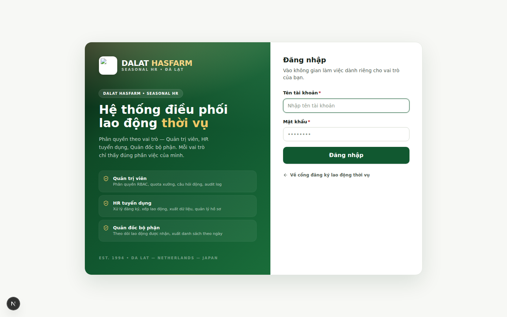
SEASONAL WORKER
Hướng dẫn sử dụng hệ thống quản lý lao động thời vụ
Dành cho HR Tuyển dụng, Quản lý bộ phận và Quản trị hệ thống — Dalat Hasfarm
Phiên bản tài liệu 1.0 · Cập nhật lần cuối: 12/08/2026 · Dựa trên mã nguồn nhánh main
Đây là tài liệu gì?
Đây là cẩm nang sử dụng hệ thống Seasonal Worker — không phải tài liệu kỹ thuật cho lập trình viên. Mọi mô tả trong tài liệu này đều được đối chiếu trực tiếp với giao diện và mã nguồn thật của hệ thống tại thời điểm viết, không có tính năng nào được "vẽ thêm".
Nếu bạn mới bắt đầu, hãy đọc Bắt đầu trong 5 phút trước tiên.
Mục lục
Bắt đầu
Nghiệp vụ hàng ngày
Quản trị hệ thống
Dành cho người ngoài hệ thống
Tham khảo nhanh
Cheat sheet theo vai trò
Ba vai trò trong hệ thống
| Vai trò |
Tên trong hệ thống |
Công việc chính |
| Quản trị viên |
ADMIN |
Quản trị toàn hệ thống: tài khoản, phân quyền, cấu hình nghiệp vụ, backup, theo dõi audit log |
| Nhân sự tuyển dụng |
HR_RECRUITER |
Tiếp nhận & duyệt hồ sơ, xếp bộ phận, quản lý Planning, xử lý Nghỉ việc/Thuyên chuyển |
| Quản đốc bộ phận |
DEPT_MANAGER |
Theo dõi lao động thuộc bộ phận được phân công, tạo yêu cầu nghỉ việc/thuyên chuyển |
Quyền hạn thực tế của mỗi vai trò còn phụ thuộc vào Phân quyền chi tiết và Data Scope do Admin cấu hình — xem chi tiết ở chương 10. Vì vậy hai người cùng vai trò DEPT_MANAGER vẫn có thể thấy quyền và dữ liệu khác nhau.
Định dạng tài liệu
- Markdown (
.md) — nguồn chính, dễ đọc trực tiếp trên GitHub, dễ cập nhật khi giao diện thay đổi.
- handbook.html — bản gộp toàn bộ tài liệu thành 1 trang, có thể mở bằng trình duyệt và in ra PDF (File → Print → Save as PDF) mà không cần cài thêm phần mềm.
- CHANGELOG.md — lịch sử cập nhật tài liệu theo từng phiên bản hệ thống.
Cập nhật handbook.html sau khi sửa nội dung .md
handbook.html là bản build, không sửa tay trực tiếp — sửa các file .md tương ứng rồi build lại:
npm install --no-save marked # chỉ cần chạy 1 lần
node scripts/build-user-guide.mjs
Nếu bạn sửa hoặc thêm sơ đồ (bash
npm install --no-save mermaid playwright-core # chỉ cần chạy 1 lần
node scripts/render-user-guide-diagrams.mjs
node scripts/build-user-guide.mjs
Hai lệnh `npm install --no-save` ở trên **không đụng tới** `package.json`/`package-lock.json` của ứng dụng — chỉ cài tạm cho máy đang chạy script build tài liệu.
## Quy ước trong tài liệu
> **Mẹo:** Gợi ý giúp bạn thao tác nhanh hơn.
> **Lưu ý:** Thông tin cần chú ý nhưng không gây hậu quả nghiêm trọng nếu bỏ qua.
> **Quan trọng:** Cảnh báo — bỏ qua có thể gây sai dữ liệu hoặc ảnh hưởng người khác.
Ảnh chụp màn hình trong tài liệu dùng **dữ liệu demo** (tên, CCCD, số điện thoại đều là dữ liệu giả lập tạo riêng để minh hoạ) — không phải dữ liệu lao động thật. Giao diện thật có thể thay đổi nhẹ theo các bản cập nhật sau này.
Bắt đầu trong 5 phút
Mục tiêu của trang này: giúp bạn thực hiện thành công công việc đầu tiên trước khi đọc toàn bộ cẩm nang.
Bước 1 — Đăng nhập
Mở địa chỉ nội bộ của hệ thống, nhập Tên tài khoản và Mật khẩu do Admin cấp, bấm Đăng nhập.
Lưu ý: Hệ thống không có tài khoản demo sẵn trên giao diện. Nếu bạn chưa có tài khoản, liên hệ Admin để được tạo tại module Phân quyền RBAC.
Bước 2 — Mở Task Center
Sau khi đăng nhập, hệ thống đưa bạn thẳng vào không gian làm việc. Việc đầu tiên nên làm mỗi ngày: bấm Task Center trên sidebar.
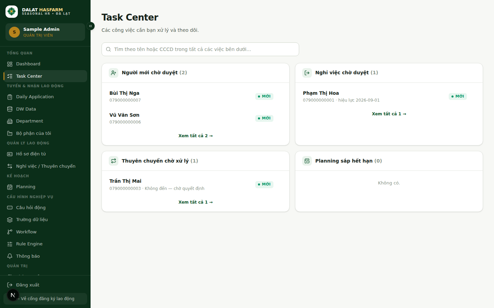
Task Center gom toàn bộ việc đang chờ bạn xử lý — hồ sơ mới, yêu cầu nghỉ việc/thuyên chuyển, planning nhu cầu sắp hết hạn — vào một màn hình, để bạn không phải mở lần lượt từng module để kiểm tra còn việc gì chưa xử lý.
Bước 3 — Kiểm tra việc chờ xử lý
Mỗi thẻ trong Task Center là một nhóm việc. Số trong ngoặc là số lượng đang chờ. Bấm "Xem tất cả →" trên bất kỳ thẻ nào để đi thẳng tới đúng màn hình xử lý việc đó.
Bước 4 — Mở Daily Application (nếu bạn là HR)
Nếu vai trò của bạn là HR Tuyển dụng, đây là màn hình bạn dùng nhiều nhất trong ngày: xem ai vừa đăng ký hôm nay, đối chiếu DW Data, xếp bộ phận trong cơ cấu tổ chức, duyệt hồ sơ Tập nghề.
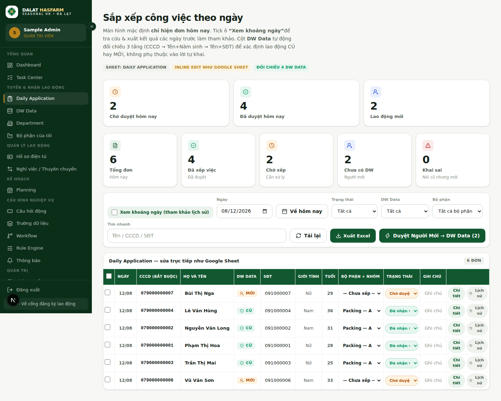
Bước 5 — Xử lý task đầu tiên
Chọn một hồ sơ Chờ duyệt, kiểm tra thông tin, chọn Bộ phận + Nhóm phù hợp, đổi trạng thái sang Đã nhận việc (nếu nhận) hoặc Không nhận (nếu từ chối). Hệ thống sẽ tự động phân bổ người tập nghề vào Kế hoạch Nhu cầu (Planning) đang áp dụng. Xong — bạn vừa hoàn thành thao tác nghiệp vụ đầu tiên trên hệ thống.
Bạn không phải HR? Đi thẳng tới phần dành cho vai trò của bạn
Muốn hiểu toàn bộ hệ thống trước khi thao tác? Đọc tiếp 01 — Giới thiệu hệ thống.
1. Giới thiệu hệ thống
1.1 Seasonal Worker — Hệ thống Quản trị Tập nghề Thời vụ là gì?
Seasonal Worker là hệ thống nội bộ giúp Dalat Hasfarm quản lý toàn bộ vòng đời của người tham gia chương trình Tập nghề thời vụ (Internship): từ lúc họ đăng ký tập nghề trên trang công khai, đến khi HR duyệt và xếp bộ phận, trong suốt thời gian tập nghề, cho tới khi họ thuyên chuyển hoặc nghỉ tập nghề.
Hệ thống thay thế cho việc quản lý bằng Google Sheet rời rạc bằng một nơi duy nhất, có phân quyền rõ ràng, lưu lại lịch sử mọi thay đổi, và tự động đối chiếu để biết một người là người tập nghề cũ (đã từng làm) hay mới (lần đầu) — không phụ thuộc vào lời tự khai của người đăng ký.
1.2 Hệ thống dùng cho ai?
| Nhóm người dùng |
Vào hệ thống bằng |
Mục đích |
| Người đăng ký Tập nghề |
Trang công khai (không cần tài khoản) |
Đăng ký thông tin tập nghề, tra cứu kết quả xếp việc |
| HR Tuyển dụng |
Tài khoản nội bộ (ADMIN, HR_RECRUITER) |
Tiếp nhận hồ sơ, đối chiếu DW Data, xếp bộ phận theo cơ cấu tổ chức, quản lý Planning nhu cầu và Nghỉ việc/Thuyên chuyển |
| Quản lý bộ phận |
Tài khoản nội bộ (DEPT_MANAGER) |
Xem toàn bộ người tập nghề thuộc Data Scope được phân công tại "Bộ phận của tôi", quản lý đa chọn (multi-select), báo nghỉ việc hàng loạt |
| Quản trị viên |
Tài khoản nội bộ (ADMIN) |
Cấu hình toàn hệ thống, quản lý tài khoản và phân quyền Data Scope trên bảng gần 100 bộ phận |
1.3 Lợi ích chính
- Một nơi duy nhất — không phải tìm hồ sơ ở nhiều Sheet khác nhau.
- Cơ cấu tổ chức chuẩn hóa — quản lý theo 5 tầng: Location → Division → Department → Section → Group.
- Đối chiếu tự động — hệ thống tự xác định người tập nghề cũ/mới qua CCCD, tên+năm sinh, hoặc tên+số điện thoại, không phụ thuộc lời tự khai.
- Không tạo hồ sơ trùng — mỗi người chỉ có 1 Hồ sơ Tập nghề điện tử duy nhất (Internship Profile) dù họ quay lại tham gia bao nhiêu đợt.
- Kế hoạch nhu cầu linh hoạt (Planning) — cho phép nhiều kế hoạch trùng thời gian (kế hoạch gốc và các lần bổ sung), phân tách nhu cầu Nam/Nữ, tự động tính số Cần tuyển và tự động cập nhật phân bổ/nghỉ việc.
- Phân quyền Data Scope tối ưu — quản lý phân quyền đa bộ phận dạng bảng lớn trực quan cho gần 100 bộ phận, giao diện "Bộ phận của tôi" mở rộng toàn bộ phạm vi mặc định.
- Có lịch sử đầy đủ — mọi thay đổi quan trọng (duyệt hồ sơ, sửa phiên bản kế hoạch, xử lý thuyên chuyển) đều được ghi lại, không bị mất khi sửa.
1.4 Luồng nghiệp vụ tổng thể
Hành trình đầy đủ của một người tập nghề trong hệ thống:

Vài điểm quan trọng cần hiểu ngay từ đầu:
- Một người = một Hồ sơ Tập nghề duy nhất. Dù họ đăng ký lại nhiều lần qua nhiều năm, hệ thống chỉ có 1 "Internship Profile" — mỗi lần đăng ký/làm việc là 1 "Internship Session" gắn vào hồ sơ đó. Xem chi tiết ở chương 5.
- Đối chiếu DW Data xảy ra ngay khi đăng ký — DW Data là kho dữ liệu đối chiếu Tập nghề và lịch sử công ty. Cột "DW Data" trên Daily Application cho biết ngay người này cũ hay mới.
- Planning quản lý theo Nhu cầu nhân lực — không dùng thuật ngữ Quota. Nhu cầu phân tách Nam/Nữ rõ ràng, số Cần tuyển được tính tự động theo công thức:
Cần tuyển = Nhu cầu - Phân bổ + Nghỉ việc (clamp về 0).
- Bộ phận của tôi mở rộng mặc định — Quản lý bộ phận khi vào sẽ thấy toàn bộ người tập nghề thuộc tất cả bộ phận trong phạm vi Data Scope của mình, kèm tính năng chọn nhiều người (multi-select) để thao tác hàng loạt.
1.5 Các module chính
| Module |
Ai dùng |
Việc dùng để làm |
| Task Center |
Cả 3 vai trò |
Tổng hợp mọi việc đang chờ xử lý |
| Daily Application |
ADMIN, HR_RECRUITER |
Tiếp nhận & xếp việc cho người đăng ký Tập nghề hàng ngày |
| DW Data |
ADMIN, HR_RECRUITER |
Kho dữ liệu đối chiếu Tập nghề và lịch sử công ty |
| Hồ sơ Tập nghề (Internship Profile) |
ADMIN, HR_RECRUITER |
Tra cứu lịch sử các đợt tập nghề của 1 người theo CCCD |
| Cơ cấu tổ chức (Department) |
ADMIN, HR_RECRUITER (quản lý toàn bộ) · DEPT_MANAGER ("Bộ phận của tôi") |
Quản lý cây cơ cấu Location → Division → Department → Section → Group |
| Planning (Kế hoạch nhu cầu) |
Cả 3 vai trò (xem/tạo tuỳ quyền) |
Quản lý kế hoạch gốc & bổ sung, nhu cầu Nam/Nữ, phân bổ và cần tuyển |
| Nghỉ việc / Thuyên chuyển |
Cả 3 vai trò (tuỳ quyền) |
Xử lý Nghỉ Tập nghề & Thuyên chuyển bộ phận |
| Users, Permissions, Data Scope |
ADMIN |
Quản lý tài khoản và phân quyền dữ liệu theo bộ phận |
| Form Builder, Field Definitions, Workflow, Rule Engine |
ADMIN (một phần mở cho HR_RECRUITER) |
Cấu hình nghiệp vụ không cần sửa code |
| Import Data, Backup, Recycle Bin, Audit Log, System Control Center |
ADMIN |
Vận hành & bảo trì hệ thống |
| Tra cứu công khai (Lookup) |
Người đăng ký (không cần tài khoản) |
Kiểm tra kết quả xếp việc Tập nghề |
2. Đăng nhập & giao diện chung
2.1 Đăng nhập
- Mở địa chỉ nội bộ của hệ thống — bạn sẽ được đưa tới trang Đăng nhập.
- Nhập Tên tài khoản.
- Nhập Mật khẩu.
- Bấm Đăng nhập.
Đăng nhập thành công, hệ thống đưa bạn thẳng vào không gian làm việc phù hợp với vai trò của bạn và hiện thông báo "Chào mừng [vai trò] — đăng nhập thành công!" ở góc màn hình.
Quan trọng: Không bao giờ dùng chung tài khoản với đồng nghiệp, kể cả khi cùng vai trò. Mọi thao tác (duyệt hồ sơ, tạo yêu cầu, xoá dữ liệu...) đều được ghi lại theo đúng tên tài khoản thực hiện ở Nhật ký hệ thống — dùng chung tài khoản làm mất khả năng truy vết ai đã làm gì.
Khi đăng nhập thất bại
| Tình huống |
Thông báo bạn sẽ thấy |
Nguyên nhân |
| Sai tên tài khoản hoặc sai mật khẩu |
"Sai tên đăng nhập hoặc mật khẩu." |
Kiểm tra lại chính tả; Caps Lock đang bật là lỗi phổ biến nhất |
| Tài khoản đã bị Admin khoá |
"Sai tên đăng nhập hoặc mật khẩu." (giống hệt lỗi trên) |
Hệ thống cố ý không phân biệt hai lỗi này, để tránh lộ thông tin tài khoản nào tồn tại trong hệ thống cho người ngoài — nếu chắc chắn thông tin đúng mà vẫn không vào được, liên hệ Admin để kiểm tra |
| Nhập sai liên tục nhiều lần trong thời gian ngắn |
"Quá nhiều lần đăng nhập sai. Vui lòng thử lại sau ít phút." |
Hệ thống tạm khoá đăng nhập theo (địa chỉ mạng + tên tài khoản) sau 5 lần sai trong 15 phút, để chống dò mật khẩu. Đợi vài phút rồi thử lại |
Đăng xuất
Bấm Đăng xuất ở cuối Sidebar. Luôn đăng xuất khi dùng máy tính/thiết bị dùng chung với người khác.
Sidebar nằm bên trái màn hình (trên di động là menu ẩn — xem chương 14), chia thành các nhóm theo nghiệp vụ:
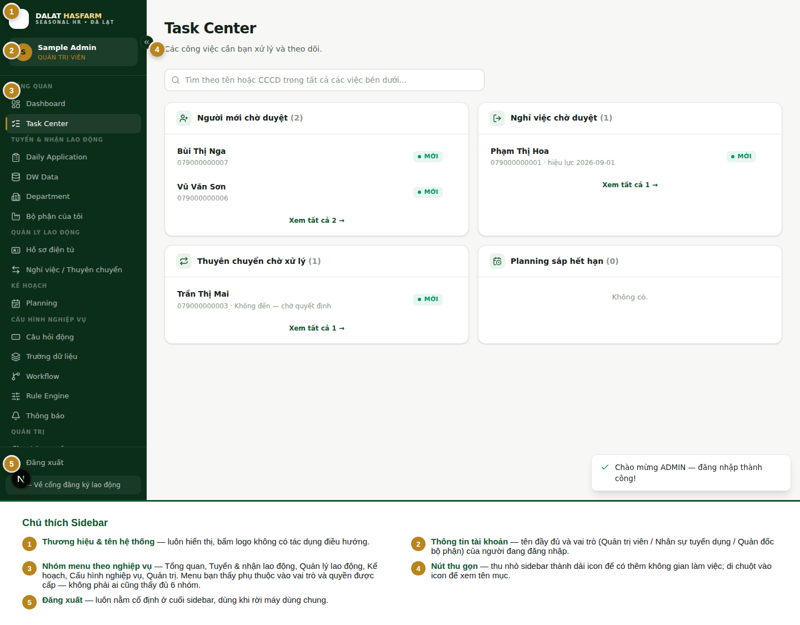
Các nhóm menu:
| Nhóm |
Gồm những mục |
| Tổng quan |
Dashboard, Task Center |
| Tuyển & nhận lao động |
Daily Application, DW Data, Department, Bộ phận của tôi |
| Quản lý lao động |
Hồ sơ điện tử, Nghỉ việc / Thuyên chuyển |
| Kế hoạch |
Planning |
| Cấu hình nghiệp vụ |
Câu hỏi động, Trường dữ liệu, Workflow, Rule Engine, Thông báo |
| Quản trị |
Phân quyền RBAC, Phân quyền chi tiết, Data Scope, Control Center, Nhật ký hệ thống, Nhập dữ liệu ban đầu, Thùng rác |
Quan trọng: Menu bạn nhìn thấy phụ thuộc vào vai trò và quyền được cấp cho tài khoản của bạn. Đây không phải lỗi hiển thị — hệ thống chủ động ẩn đi những mục bạn không có quyền dùng. Ví dụ Quản đốc bộ phận sẽ không thấy nhóm "Quản trị" hay mục "Daily Application", trong khi Admin thấy đầy đủ tất cả. Không có giả định "mọi tài khoản đều thấy như nhau".
Thu gọn Sidebar: bấm mũi tên nhỏ ở cạnh phải Sidebar để thu gọn thành dải icon, tăng không gian làm việc cho màn hình rộng — di chuột vào icon để xem tên đầy đủ.
2.3 Không có thanh điều hướng riêng ở đầu trang
Khác với một số phần mềm khác, Seasonal Worker hiện không có thanh header/breadcrumb cố định ở đầu trang trên desktop. Thay vào đó:
- Tên trang, mô tả ngắn và các nút hành động chính nằm ngay đầu nội dung từng trang (không phải một thanh riêng).
- Tên tài khoản, vai trò và nút Đăng xuất nằm cố định trong Sidebar (xem ở trên) — không có menu "hồ sơ cá nhân" (profile dropdown) riêng.
- Không có ô tìm kiếm toàn hệ thống (global search) — mỗi màn hình có ô tìm kiếm riêng cho đúng phạm vi dữ liệu của màn hình đó (ví dụ ô tìm kiếm trên Task Center chỉ tìm trong các việc đang chờ xử lý, ô tìm kiếm trên Daily Application chỉ tìm trong hồ sơ ngày đang xem).
- Trên di động, nút mở menu (☰) ở góc trên-trái đóng vai trò gần giống một thanh header — xem chương 14.
3. Task Center
Đây là màn hình quan trọng nhất trong hệ thống. Hãy tạo thói quen mở Task Center đầu tiên mỗi khi bắt đầu ngày làm việc.
3.1 Task Center là gì?
Task Center tổng hợp mọi việc đang chờ bạn xử lý vào một màn hình duy nhất, thay vì bắt bạn phải tự nhớ và tự mở lần lượt từng module (Daily Application, Workforce Movement, Planning...) để kiểm tra còn việc gì tồn đọng.
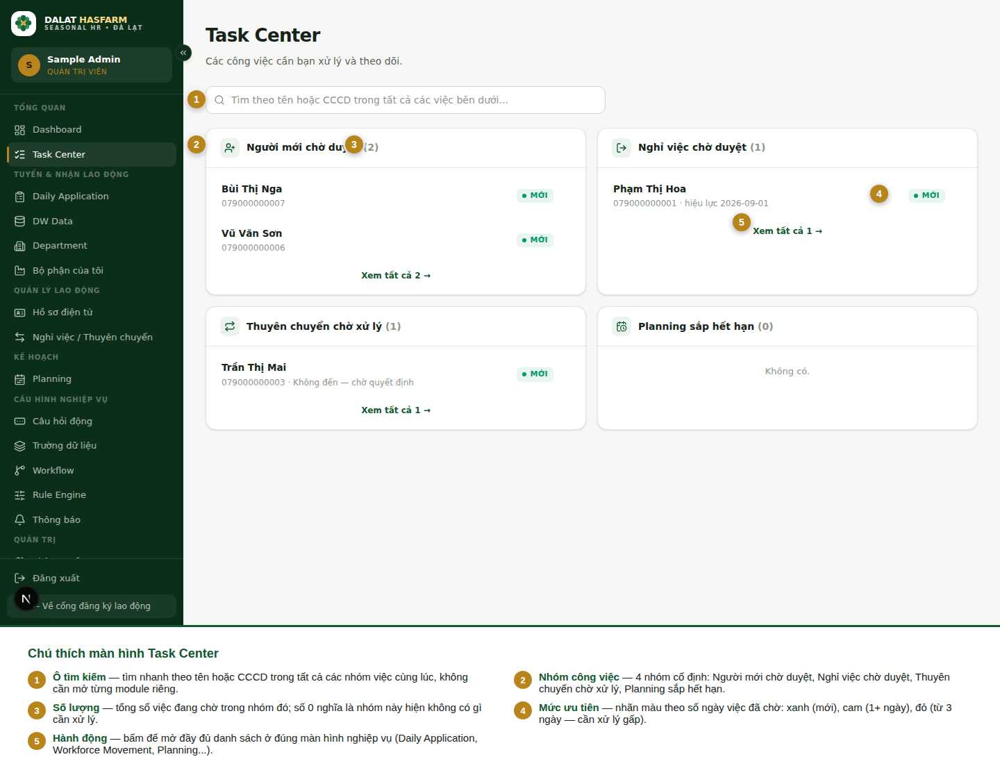
3.2 Bốn nhóm việc
| Nhóm |
Ý nghĩa |
Bấm "Xem tất cả" sẽ đưa bạn tới |
| Người mới chờ duyệt |
Hồ sơ Daily Application đang ở trạng thái Chờ duyệt |
Daily Application |
| Nghỉ việc chờ duyệt |
Yêu cầu nghỉ việc đang chờ HR xử lý (trạng thái Chờ HR duyệt) |
Workforce Movement |
| Thuyên chuyển chờ xử lý |
Yêu cầu thuyên chuyển đang chờ HR xác nhận hoặc đang chờ HR quyết định vì người lao động không đến |
Workforce Movement |
| Planning sắp hết hạn |
Kế hoạch đang Đang áp dụng và sẽ hết hạn trong 7 ngày tới |
Planning |
Lưu ý: Yêu cầu thuyên chuyển đang ở trạng thái Đã hoãn (chờ ngày mới) không xuất hiện ở nhóm "Thuyên chuyển chờ xử lý" — vì đã có ngày hẹn mới, không cần HR xử lý thêm cho tới ngày đó. Đây là hành vi có chủ đích, không phải sai sót.
Mỗi nhóm chỉ hiện một số dòng đầu tiên (ưu tiên việc cũ nhất/gấp nhất) kèm tổng số thực tế trong ngoặc — bấm "Xem tất cả N →" để mở đầy đủ.
3.3 Tìm nhanh
Ô tìm kiếm ở đầu trang tìm theo tên hoặc CCCD trên tất cả 4 nhóm việc cùng lúc — không cần biết trước việc đó thuộc nhóm nào.
3.4 Mức ưu tiên
Mỗi việc trong nhóm "Người mới chờ duyệt", "Nghỉ việc chờ duyệt" và "Thuyên chuyển chờ xử lý" có một nhãn màu tính theo số ngày việc đã chờ xử lý kể từ khi phát sinh:
| Nhãn |
Điều kiện |
Ý nghĩa |
| 🟢 Mới |
Dưới 1 ngày |
Vừa phát sinh |
| 🟠 N ngày |
1 – 2 ngày |
Đang chờ, nên xử lý sớm |
| 🔴 Ưu tiên cao — N ngày |
Từ 3 ngày trở lên |
Đã tồn đọng lâu, cần xử lý gấp |
3.5 Khi không có gì cần xử lý
Nếu cả 4 nhóm đều trống, Task Center hiện thông báo "Không còn công việc cần xử lý / Bạn đã xử lý hết các task hiện tại." — đây là trạng thái tốt, không phải lỗi.
Nếu bạn gõ từ khoá vào ô tìm kiếm mà không có kết quả, thông báo sẽ là "Không có việc nào khớp với "[từ khoá]"."
3.6 Khi có sự cố
| Thông báo |
Nguyên nhân |
Cách xử lý |
| "Phiên đăng nhập đã hết hạn. Vui lòng đăng nhập lại." |
Phiên làm việc quá hạn |
Bấm nút để đăng nhập lại |
| "Tài khoản của bạn không có quyền xem Task Center." |
Quyền dashboard.manage (hoặc quyền tương ứng) đang bị tắt cho vai trò của bạn |
Liên hệ Admin kiểm tra tại Phân quyền chi tiết |
| "Không kết nối được máy chủ. Kiểm tra mạng và thử lại." / "Không thể tải dữ liệu" |
Mất mạng hoặc lỗi máy chủ tạm thời |
Bấm Thử lại |
3.7 Phạm vi dữ liệu hiển thị
Task Center chỉ hiện những việc thuộc phạm vi dữ liệu (Data Scope) của bạn. Với Quản đốc bộ phận, chỉ những việc liên quan tới bộ phận được phân công mới xuất hiện — xem chương 10.
4. Daily Application
Ai dùng: ADMIN, HR_RECRUITER. Đây là màn hình HR dùng nhiều nhất trong ngày.
4.1 Mở Daily Application
Vào Sidebar → nhóm Tuyển & nhận lao động → Daily Application.
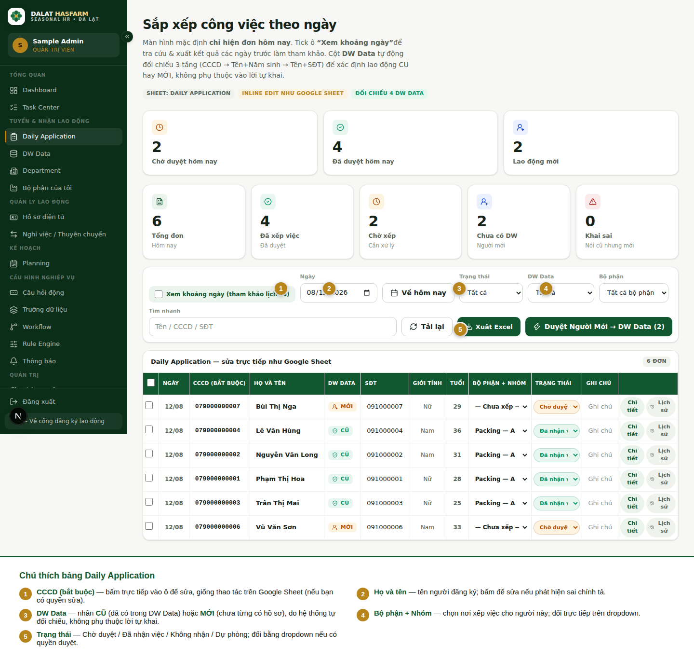
Mặc định màn hình chỉ hiện đơn đăng ký của hôm nay để gọn gàng, dễ xử lý trong ngày.
4.2 Chọn ngày / xem khoảng ngày
Tick vào ô "Xem khoảng ngày" để chọn khoảng "Từ ngày – Đến ngày" và tra cứu lại các đơn ngày trước (chỉ để tham khảo — không nên duyệt hồ sơ của ngày cũ). Bỏ tick để quay về chế độ mặc định "chỉ hôm nay", hoặc bấm "Về hôm nay".
4.3 Tìm ứng viên / lao động
Dùng ô "Tìm nhanh" — mặc định tìm theo Tên, CCCD, SĐT. Admin có thể mở rộng danh sách cột được phép tìm tại Trường dữ liệu (Metadata).
Ngoài ra có thể lọc theo Trạng thái, DW Data (Cũ/Mới), và Bộ phận.
4.4 Đọc bảng dữ liệu
| Cột |
Ý nghĩa |
| CCCD (bắt buộc) |
Số CCCD người đăng ký khai — bắt buộc phải có |
| Họ và tên |
Tên đầy đủ |
| DW Data |
Nhãn CŨ (đã có trong DW Data) hoặc MỚI (chưa từng có hồ sơ) — do hệ thống tự động đối chiếu, không phụ thuộc lời tự khai của người đăng ký. Dấu cảnh báo (⚠) xuất hiện khi người đăng ký tự khai là đã từng làm nhưng hệ thống không tìm thấy họ trong DW Data — cần kiểm tra kỹ trường hợp này |
| SĐT, Giới tính, Tuổi |
Thông tin cá nhân người đăng ký khai |
| Bộ phận + Nhóm |
Nơi dự kiến xếp việc — chọn qua dropdown |
| Trạng thái |
Xem bảng trạng thái bên dưới |
| Ghi chú |
Ghi chú nội bộ của HR về hồ sơ này |
Nếu bạn có quyền sửa (registrations.edit), hầu hết các ô có thể bấm trực tiếp để sửa giống thao tác trên Google Sheet — gõ xong bấm Enter hoặc bấm ra ngoài ô để lưu.
Lưu ý về CCCD/SĐT/Địa chỉ: Trên màn hình nội bộ này, CCCD/SĐT hiển thị đầy đủ cho người có quyền xem hồ sơ (đúng như dữ liệu người đăng ký khai) — việc che (mask) thông tin chỉ áp dụng khi xuất Excel, tuỳ theo quyền privacy.view_cccd / privacy.view_phone / privacy.view_address của từng vai trò. Xem chương 11.
4.5 Các trạng thái
| Trạng thái |
Ý nghĩa |
Ai xử lý |
| Chờ duyệt |
Vừa đăng ký, chưa được HR xử lý |
HR |
| Đã nhận việc |
HR đã duyệt, người này được nhận vào làm |
HR |
| Không nhận |
HR từ chối hồ sơ |
HR |
| Dự phòng |
Đưa vào danh sách dự phòng, chưa xếp việc ngay |
HR |
Đổi trạng thái bằng dropdown trên cột Trạng thái (nếu có quyền registrations.approve).
Quan trọng: Khi bạn duyệt một hồ sơ đang gắn nhãn MỚI vào một bộ phận (qua nút "Duyệt Người Mới → DW Data" bên dưới), hệ thống sẽ tự động thêm họ vào DW Data và đổi nhãn hồ sơ đó từ MỚI sang CŨ — vì từ giờ trở đi họ chính thức có trong kho dữ liệu gốc. Đây là hành vi đúng, không phải lỗi hiển thị.
4.6 Duyệt hàng loạt người mới → DW Data
Nút "Duyệt Người Mới → DW Data (N)" mở hộp thoại liệt kê tất cả người đang gắn nhãn MỚI trong ngày, cho phép:
- Tick chọn từng người, hoặc Chọn tất cả.
- Chọn 1 bộ phận chung để xếp cả nhóm cùng lúc (tuỳ chọn — để trống nếu muốn giữ nguyên bộ phận đã xếp riêng cho từng người).
- Bấm Xác nhận Import — hệ thống duyệt tất cả, thêm vào DW Data, và báo kết quả (số đã duyệt / số đã thêm DW Data / số không thành công kèm lý do).
Có thể chọn nhiều hồ sơ bất kỳ (không riêng nhóm "người mới") ở bảng chính rồi dùng hai nút "Duyệt & Nhập DW Data" / "Từ chối" xuất hiện khi có hồ sơ được tick chọn.
Quan trọng: Giới hạn tối đa 500 hồ sơ mỗi lần duyệt hàng loạt.
4.7 Xem chi tiết & lịch sử chỉnh sửa
- Nút "Chi tiết" mở đầy đủ thông tin hồ sơ, bao gồm kết quả đối chiếu DW Data và các câu trả lời khảo sát (nếu có).
- Nút "Lịch sử" hiện toàn bộ các lần chỉnh sửa hồ sơ này — ai sửa, sửa gì, khi nào. Nếu bạn có quyền, có thể khôi phục về phiên bản trước ngay từ đây.
4.8 Xuất Excel
Bấm "Xuất Excel" để tải dữ liệu ra file, theo khoảng ngày và bộ phận đang chọn trên màn hình.
Lưu ý: File xuất ra theo đúng khoảng ngày và bộ phận đang lọc — nhưng không áp dụng thêm bộ lọc Trạng thái/DW Data hay từ khoá đang gõ ở ô Tìm nhanh. Ví dụ nếu bạn đang lọc "Trạng thái = Chờ duyệt" để xem trên màn hình, file xuất ra vẫn có đủ mọi trạng thái trong đúng khoảng ngày + bộ phận đó, không chỉ riêng "Chờ duyệt".
Xem quy tắc che thông tin cá nhân ở chương 11.
5. DW Data / Hồ sơ Tập nghề / Đợt Tập nghề
Đây là 3 khái niệm quan trọng trong hệ thống. Hiểu đúng 3 khái niệm này giúp bạn đọc đúng ý nghĩa của cột "DW Data" trên Daily Application và nắm rõ cách hệ thống lưu trữ lịch sử người tập nghề.
5.1 Ba khái niệm, ba vai trò khác nhau
| Khái niệm |
Nó là gì |
Khi nào được tạo |
| DW Data |
Nguồn dữ liệu đối chiếu Tập nghề/lịch sử — trả lời câu hỏi "người này đã từng có trong dữ liệu công ty chưa?" |
Được nạp sẵn từ dữ liệu đối chiếu lịch sử, hoặc tự động thêm mới khi HR duyệt một người đang gắn nhãn MỚI |
| Internship Profile (Hồ sơ Tập nghề) |
Hồ sơ duy nhất của một người, gộp toàn bộ lịch sử các lần đăng ký và các đợt Tập nghề |
Tự động tạo ngay khi người đó đăng ký lần đầu (kể cả trước khi HR duyệt) |
| Internship Session (Đợt Tập nghề) |
Một lần đăng ký/một đợt Tập nghề cụ thể, gắn vào đúng 1 Hồ sơ Tập nghề |
Tự động tạo mỗi lần có một lượt đăng ký mới |
Ví dụ dễ hiểu: Chị A đăng ký tập nghề lần đầu vào tháng 3 — hệ thống tạo 1 Hồ sơ Tập nghề (Internship Profile) cho chị A và 1 Đợt Tập nghề (Internship Session) cho đợt tháng 3 đó. Tháng 8, chị A quay lại đăng ký lần nữa. Hệ thống nhận ra chị A đã có hồ sơ (qua đối chiếu DW Data / CCCD), nên không tạo người mới — chỉ thêm 1 Đợt Tập nghề thứ hai vào đúng Hồ sơ Tập nghề cũ của chị A. Kết quả: chị A luôn chỉ có 1 hồ sơ duy nhất, có thể xem lại toàn bộ 2 đợt làm việc của mình ở cùng một nơi.
5.2 DW Data — Nguồn dữ liệu đối chiếu
Vào Sidebar → DW Data (Đối chiếu) (chỉ ADMIN, HR_RECRUITER).
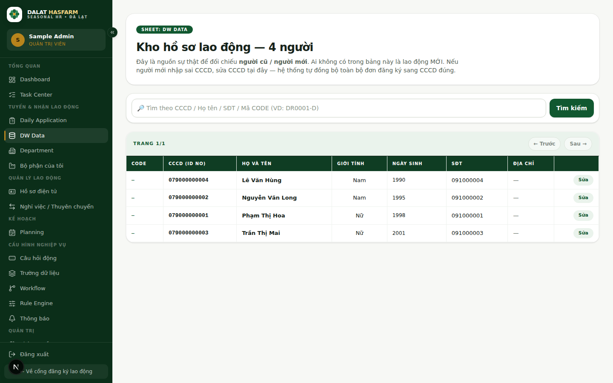
Đây là nguồn dữ liệu đối chiếu lịch sử công ty để xác định người cũ/người mới:
- Người tập nghề CŨ: Đã có thông tin trong DW Data.
- Người tập nghề MỚI: Chưa từng có trong DW Data.
Nếu người đăng ký khai sai CCCD, bạn có thể sửa lại CCCD ngay tại DW Data — hệ thống sẽ tự động đồng bộ lại toàn bộ đơn đăng ký liên quan sang CCCD đúng.
Tìm kiếm theo CCCD / Họ tên / SĐT / Mã CODE (ví dụ định dạng mã: DR0001-D).
5.3 Hồ sơ Tập nghề (Internship Profile)
Vào Sidebar → nhóm Quản lý Tập nghề → Hồ sơ Tập nghề.
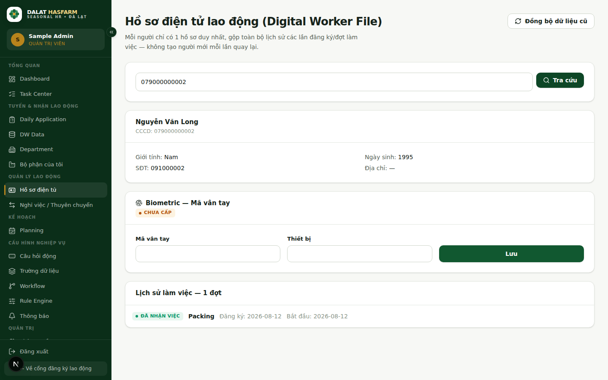
- Nhập CCCD, bấm Tra cứu.
- Xem thông tin cá nhân, mục Biometric — Mã vân tay người tập nghề (trạng thái Đã cấp/Chưa cấp — HR có thể nhập/sửa mã và thiết bị vân tay tại đây), và Lịch sử đợt Tập nghề — toàn bộ các Internship Session của người này, sắp xếp từ mới nhất tới cũ nhất.
Mẹo: Nếu hệ thống báo "Không tìm thấy hồ sơ", rất có thể người này chưa từng đăng ký lần nào qua hệ thống — kiểm tra lại số CCCD.
Nút "Đồng bộ dữ liệu cũ" ở góc trên bên phải dùng để quét lại dữ liệu Daily Application cũ và tự tạo/liên kết Hồ sơ Tập nghề + Đợt Tập nghề còn thiếu — dùng khi nâng cấp hệ thống hoặc phát hiện dữ liệu cũ chưa được liên kết đầy đủ, không cần dùng hàng ngày.
6. Cơ cấu tổ chức & "Bộ phận của tôi"
Hệ thống quản lý cơ cấu tổ chức Dalat Hasfarm theo chuẩn 5 tầng:
$$\text{Location} \longrightarrow \text{Division} \longrightarrow \text{Department} \longrightarrow \text{Section} \longrightarrow \text{Group}$$
Sử dụng nhất quán tên gọi chuẩn khi diễn đạt cơ cấu phòng ban.
Có 2 màn hình khác nhau tuỳ vai trò:
| Màn hình |
Ai dùng |
Xem gì |
Cơ cấu tổ chức (Department) (/admin/departments) |
ADMIN, HR_RECRUITER |
Quản lý toàn bộ danh mục bộ phận trong cơ cấu tổ chức |
Bộ phận của tôi (/department) |
DEPT_MANAGER (ADMIN/HR_RECRUITER cũng xem được) |
Xem toàn bộ người tập nghề thuộc các bộ phận nằm trong Data Scope được phân công |
6.1 Cơ cấu tổ chức (dành cho Admin / HR)
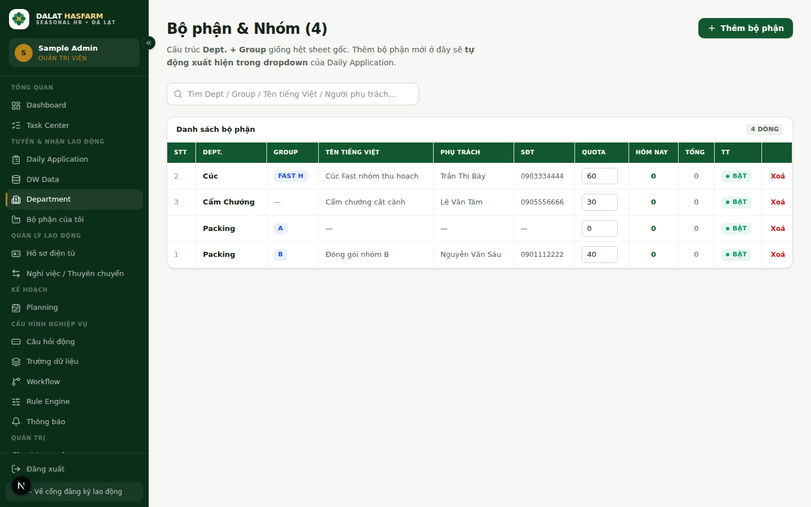
- Phân cấp chuẩn: Location (Vùng/Trại) → Division (Khối) → Department (Tên bộ phận) → Section (Phân khu/Mảng) → Group (Tổ/Nhóm).
- Bấm "+ Thêm bộ phận" để tạo bộ phận mới — bộ phận vừa tạo sẽ tự động xuất hiện trong dropdown xếp việc ở Daily Application và Data Scope ngay lập tức.
- Có thể sửa trực tiếp trên bảng: Nhu cầu nhân lực dự kiến/ngày, bật/khoá bộ phận (nút Bật/Khoá ở cột trạng thái — khoá một bộ phận sẽ ẩn nó khỏi dropdown xếp việc mới nhưng không xoá dữ liệu cũ), và Xoá (xoá mềm — đưa vào Thùng rác).
- Các cột "Hôm nay" / "Tổng" cho biết số người tập nghề đã được xếp vào bộ phận đó.
6.2 "Bộ phận của tôi" (dành cho Quản lý bộ phận — DEPT_MANAGER)
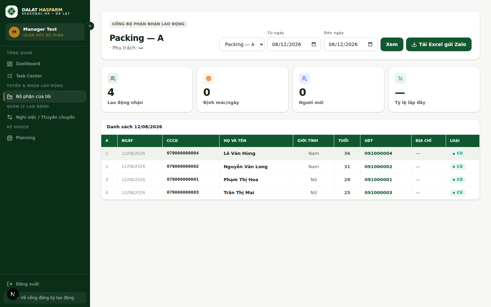
Đây là cổng dành cho Quản lý bộ phận để theo dõi và quản lý người tập nghề trong phạm vi phụ trách:
Mặc định hiển thị toàn bộ phạm vi Data Scope
Khi vào trang, hệ thống tự động hiển thị danh sách tất cả người tập nghề thuộc mọi bộ phận được gán cho bạn trong Data Scope, không bắt buộc bạn phải chọn từng bộ phận riêng lẻ trước khi xem.
Bộ lọc linh hoạt theo cơ cấu tổ chức
Bạn có thể nhanh chóng thu hẹp danh sách theo:
- Location (Địa điểm / Trại)
- Division (Khối)
- Department (Bộ phận)
- Section (Phân khu / Mảng)
- Group (Tổ / Nhóm)
- Khoảng ngày (Từ ngày → Đến ngày)
- Tìm kiếm nhanh theo Họ tên, CCCD, Số điện thoại.
Bảng dữ liệu chuẩn hóa
Bảng tập trung vào các thông tin điều hành cần thiết:
- Checkbox chọn dòng (Multi-select)
- STT, Họ và tên, CCCD (đã che bảo mật)
- Giới tính (Nam / Nữ)
- Department, Section, Group
- Ngày bắt đầu, Trạng thái tiếp nhận
- Nút thao tác nhanh: Báo nghỉ Tập nghề, Xem Hồ sơ Tập nghề.
(Đã loại bỏ các cột không cần thiết như Loại CŨ/MỚI, Tuổi).
Chọn nhiều người (Multi-select) & Thao tác hàng loạt (Bulk Actions)
- Bạn có thể tick chọn từng người hoặc bấm "Chọn tất cả" trên danh sách đang hiển thị.
- Khi chọn từ 1 người trở lên, thanh công cụ Bulk Action Bar nổi phía dưới sẽ xuất hiện:
- Báo nghỉ việc hàng loạt: Mở hộp thoại nhập ngày hiệu lực, lý do nghỉ việc để gửi hàng loạt yêu cầu báo nghỉ cho HR duyệt.
- Xuất Excel đã chọn: Xuất file danh sách những người đã chọn để gửi Zalo hoặc in ấn.
- Bỏ chọn: Huỷ chọn tất cả.
Lưu ý — Data Scope: Quản lý bộ phận chỉ nhìn thấy người tập nghề thuộc (các) bộ phận được phân công tại Data Scope. Nếu bạn không thấy bộ phận mình phụ trách, liên hệ Admin để được gán đúng bộ phận tại màn hình Quản trị Data Scope.
7. Planning — Kế hoạch Nhu cầu Tập nghề
Ai dùng: Xem được cả 3 vai trò (tuỳ theo Data Scope); tạo/sửa kế hoạch cần quyền planning.manage (mặc định ADMIN, HR_RECRUITER).
7.1 Planning là gì?
Planning là công cụ quản lý Nhu cầu tuyển dụng Tập nghề theo từng giai đoạn (khoảng ngày cụ thể) cho từng bộ phận theo cơ cấu tổ chức Location → Division → Department → Section → Group.
Hệ thống sử dụng các thuật ngữ tuyển dụng chuẩn:
- Nhu cầu nhân lực / Nhu cầu Tập nghề (không dùng thuật ngữ Quota).
- Phân bổ: Số lượng người tập nghề đã được xếp vào bộ phận.
- Nghỉ việc: Số lượng người tập nghề trong kế hoạch đã nghỉ việc.
- Cần tuyển: Số lượng nhân sự cần tiếp tục tuyển dụng để đáp ứng đủ nhu cầu.
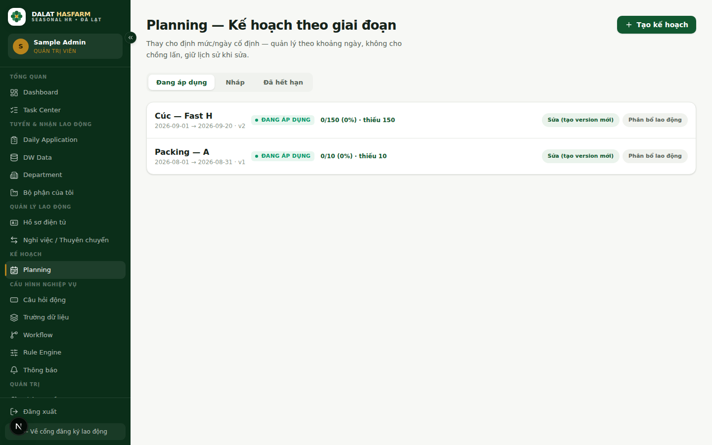
7.2 Cho phép nhiều kế hoạch trùng thời gian & Yêu cầu bổ sung
Hệ thống cho phép nhiều kế hoạch cùng tồn tại trong cùng một khoảng thời gian cho cùng một bộ phận, phân biệt rõ giữa hai khái niệm:
- Kế hoạch gốc (Original): Yêu cầu nhân lực ban đầu của bộ phận cho một đợt tập nghề.
- Yêu cầu bổ sung (Supplement): Khi bộ phận phát sinh nhu cầu tăng thêm nhân sự trong cùng khoảng thời gian (Bổ sung lần 1, Bổ sung lần 2...). Đây là các yêu cầu cộng dồn nhu cầu, không phải thay thế kế hoạch gốc.
- Phiên bản mới (Versioning): Khi cần chỉnh sửa thông tin của một kế hoạch đang chạy, hệ thống tạo ra một phiên bản mới (v2, v3) và chuyển bản cũ sang trạng thái Đã hết hạn để giữ nguyên lịch sử kiểm toán.
7.3 Phân tách giới tính & Công thức tính tự động
Mỗi kế hoạch quản lý chi tiết theo giới tính:
| Nhóm chỉ số |
Chi tiết |
Cách tính / Nguồn dữ liệu |
| Nhu cầu cần |
Nhu cầu Nam (demandMale), Nhu cầu Nữ (demandFemale) |
Do người tạo kế hoạch nhập |
| Phân bổ |
Phân bổ Nam (allocatedMale), Phân bổ Nữ (allocatedFemale) |
Tự động tổng hợp từ các đợt tập nghề đã được xếp việc (APPROVED) vào kế hoạch này |
| Nghỉ việc |
Nghỉ Nam (resignedMale), Nghỉ Nữ (resignedFemale) |
Tự động tổng hợp từ các yêu cầu Nghỉ việc (RESIGNATION) đã có hiệu lực (INACTIVE) của kế hoạch |
| Cần tuyển |
Cần tuyển Nam, Cần tuyển Nữ, Tổng cần tuyển |
Tự động tính theo công thức tuyển dụng chuẩn |
Công thức tính số Cần tuyển:
$$\text{Cần tuyển Nam} = \max(0, \text{Nhu cầu Nam} - \text{Phân bổ Nam} + \text{Nghỉ việc Nam})$$
$$\text{Cần tuyển Nữ} = \max(0, \text{Nhu cầu Nữ} - \text{Phân bổ Nữ} + \text{Nghỉ việc Nữ})$$
$$\text{Tổng cần tuyển} = \text{Cần tuyển Nam} + \text{Cần tuyển Nữ}$$
Ví dụ thực tế:
- Nam: Nhu cầu = 20, Phân bổ = 15, Nghỉ việc = 2 $\longrightarrow$ Cần tuyển = $20 - 15 + 2 = 7$
- Nữ: Nhu cầu = 30, Phân bổ = 25, Nghỉ việc = 1 $\longrightarrow$ Cần tuyển = $30 - 25 + 1 = 6$
- Tổng cần tuyển: $7 + 6 = 13$ người.
Quy tắc bảo vệ: Người dùng không nhập tay cột "Cần tuyển". Nếu số lượng phân bổ thực tế vượt quá nhu cầu, hệ thống tự động giữ số Cần tuyển ở mức 0 (không để xảy ra số cần tuyển âm).
7.4 Tự động cập nhật Phân bổ, Nghỉ việc và Thuyên chuyển
Hệ thống tự động liên kết các luồng vận hành để cập nhật dữ liệu Planning theo thời gian thực:
Khi HR xếp việc (Recruiter Assignment):
- Khi một người tập nghề được duyệt nhận việc (
APPROVED) và gán vào bộ phận, hệ thống tự động tìm kế hoạch ACTIVE phù hợp (ưu tiên kế hoạch gốc, sau đó đến các kế hoạch bổ sung còn thiếu chỉ tiêu theo đúng giới tính) và cập nhật số Phân bổ.
- Thao tác là giao dịch an toàn (transactional), chống trùng lặp (idempotent) khi chỉnh sửa bộ phận hoặc duyệt lại.
Khi có Nghỉ việc (Resignation):
- Khi yêu cầu nghỉ việc được HR phê duyệt có hiệu lực, số lượng Nghỉ việc của kế hoạch tương ứng tự động tăng lên, kéo theo số Cần tuyển tăng tương ứng để bộ phận tiếp tục tuyển bù.
Khi có Thuyên chuyển (Transfer):
- Khi người tập nghề hoàn tất thuyên chuyển đến bộ phận mới (
CONFIRM_ARRIVED), bộ phận nguồn được giảm phân bổ và bộ phận đích được tự động tăng phân bổ vào kế hoạch đang áp dụng của bộ phận đích.
- Không cập nhật khi yêu cầu mới ở trạng thái chờ duyệt (
PENDING_HR).
7.5 Tạo kế hoạch gốc & Yêu cầu bổ sung
Tạo kế hoạch gốc:
- Bấm "+ Kế hoạch gốc mới"
- Chọn Bộ phận, khoảng ngày (Từ ngày → Đến ngày).
- Nhập Nhu cầu Nam và Nhu cầu Nữ.
- Chọn Kích hoạt ngay (Active) hoặc lưu Nháp (Draft).
Tạo yêu cầu bổ sung:
- Bấm "Yêu cầu bổ sung"
- Chọn Bộ phận và liên kết với Kế hoạch gốc tương ứng trong khoảng thời gian đó.
- Nhập Nhu cầu bổ sung (Nam / Nữ).
- Hệ thống tự động đánh số thứ tự bổ sung (Bổ sung 1, Bổ sung 2...).
7.6 Sửa kế hoạch — Lưu lịch sử phiên bản (Versioning)
Khi cần điều chỉnh ngày hoặc nhu cầu của một kế hoạch đang chạy:
- Bấm "Sửa (tạo version mới)" trên dòng kế hoạch.
- Nhập thông tin điều chỉnh.
- Hệ thống tạo ra phiên bản mới (v2, v3...), giữ nguyên toàn bộ liên kết phân bổ hiện tại và chuyển bản ghi cũ sang trạng thái Đã hết hạn để lưu vết kiểm toán.
8. Workforce Movement (Nghỉ việc & Thuyên chuyển)
Ai dùng: xem/tạo yêu cầu — cả 3 vai trò (tuỳ quyền); HR (ADMIN, HR_RECRUITER) là người xác nhận cuối cùng.
Quan trọng: HR luôn là người xác nhận thuyên chuyển — không phải bộ phận mới xác nhận. Nếu bạn là Quản đốc bộ phận nhận người thuyên chuyển đến, bạn không cần (và không thể) tự xác nhận trên hệ thống — HR sẽ xử lý.
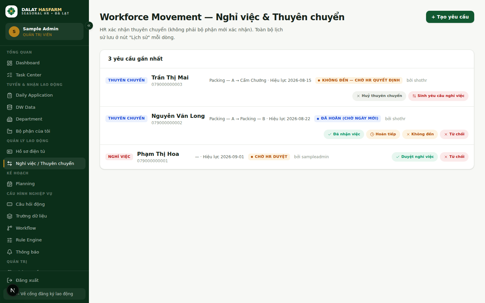
8.1 Hai loại yêu cầu
Nghỉ việc (Resignation)

Thuyên chuyển (Transfer)

8.2 Tạo yêu cầu mới
Bấm "+ Tạo yêu cầu":
- Tìm lao động theo CCCD — bắt buộc tìm và chọn đúng người trước.
- Loại yêu cầu — Nghỉ việc hoặc Thuyên chuyển.
- Nếu là Thuyên chuyển: chọn Bộ phận mới — bắt buộc.
- Ngày hiệu lực — bắt buộc.
- Lý do, Ghi chú — tuỳ chọn nhưng nên ghi rõ để HR xử lý nhanh và dễ tra cứu về sau.
- Bấm "Gửi yêu cầu (chờ HR duyệt)".
8.3 Các hành động HR có thể thực hiện
| Trạng thái hiện tại |
Hành động khả dụng |
Kết quả |
| Nghỉ việc — Chờ HR duyệt |
Duyệt nghỉ việc |
Chuyển sang Đã nghỉ việc |
|
Từ chối |
Chuyển sang HR từ chối |
| Thuyên chuyển — Chờ HR xác nhận |
Đã nhận việc |
Chuyển sang Đã chuyển bộ phận |
|
Hoãn (nhập ngày chuyển mới) |
Chuyển sang Đã hoãn (chờ ngày mới) |
|
Không đến |
Chuyển sang Không đến — chờ HR quyết định |
|
Từ chối |
Chuyển sang HR từ chối |
| Thuyên chuyển — Đã hoãn |
Đã nhận việc / Hoãn tiếp / Không đến / Từ chối |
Như trên |
| Thuyên chuyển — Không đến, chờ quyết định |
Huỷ thuyên chuyển |
Chuyển sang Đã huỷ thuyên chuyển, không tạo gì thêm |
|
Sinh yêu cầu nghỉ việc |
Tự động tạo một yêu cầu Nghỉ việc mới, liên kết với yêu cầu thuyên chuyển này, để xử lý tiếp theo hướng "người này đã nghỉ hẳn" |
Lưu ý: "Sinh yêu cầu nghỉ việc" chỉ tạo được đúng 1 lần cho mỗi yêu cầu thuyên chuyển — bấm lại nhiều lần (double-click, mạng chậm...) sẽ không tạo trùng thêm yêu cầu nghỉ việc thứ hai.
8.4 Xem lịch sử
Toàn bộ lịch sử xử lý của một yêu cầu (ai tạo, ai xử lý, đổi trạng thái khi nào) được lưu lại — dùng nút "Lịch sử" trên mỗi dòng để xem lại.
8.5 Phạm vi dữ liệu
Danh sách yêu cầu hiển thị theo đúng Data Scope của bạn — Quản đốc bộ phận chỉ thấy yêu cầu liên quan tới bộ phận được phân công. Xem chương 10.
9. Các module Admin
Chương này hướng dẫn các module chỉ (hoặc chủ yếu) dành cho Quản trị viên. Không đi sâu vào cách hệ thống được lập trình — chỉ tập trung vào "dùng khi nào, ai được dùng, thao tác chính, lưu ý".
Users (Phân quyền RBAC)
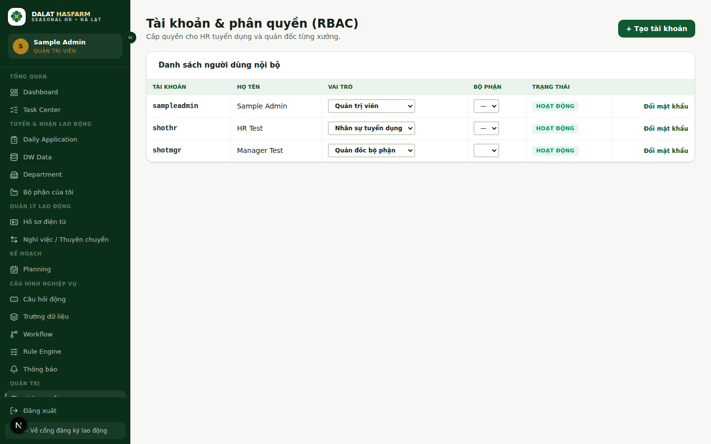
Dùng khi nào: cấp/thu hồi tài khoản cho nhân viên nội bộ.
Ai được dùng: chỉ ADMIN.
Thao tác chính:
- Bấm "+ Tạo tài khoản", nhập Tên tài khoản, Mật khẩu, Họ tên, chọn Vai trò (
ADMIN / HR_RECRUITER / DEPT_MANAGER) và Bộ phận (chỉ áp dụng khi vai trò là DEPT_MANAGER).
- Đổi vai trò, đổi bộ phận, bật/khoá tài khoản, đổi mật khẩu trực tiếp trên bảng.
Lưu ý: Mật khẩu tối thiểu 8 ký tự. Khoá tài khoản (thay vì xoá) là cách được khuyến khích khi nhân viên nghỉ việc — giữ lại được lịch sử thao tác của họ trong Nhật ký hệ thống.
Phân quyền chi tiết (Permissions)
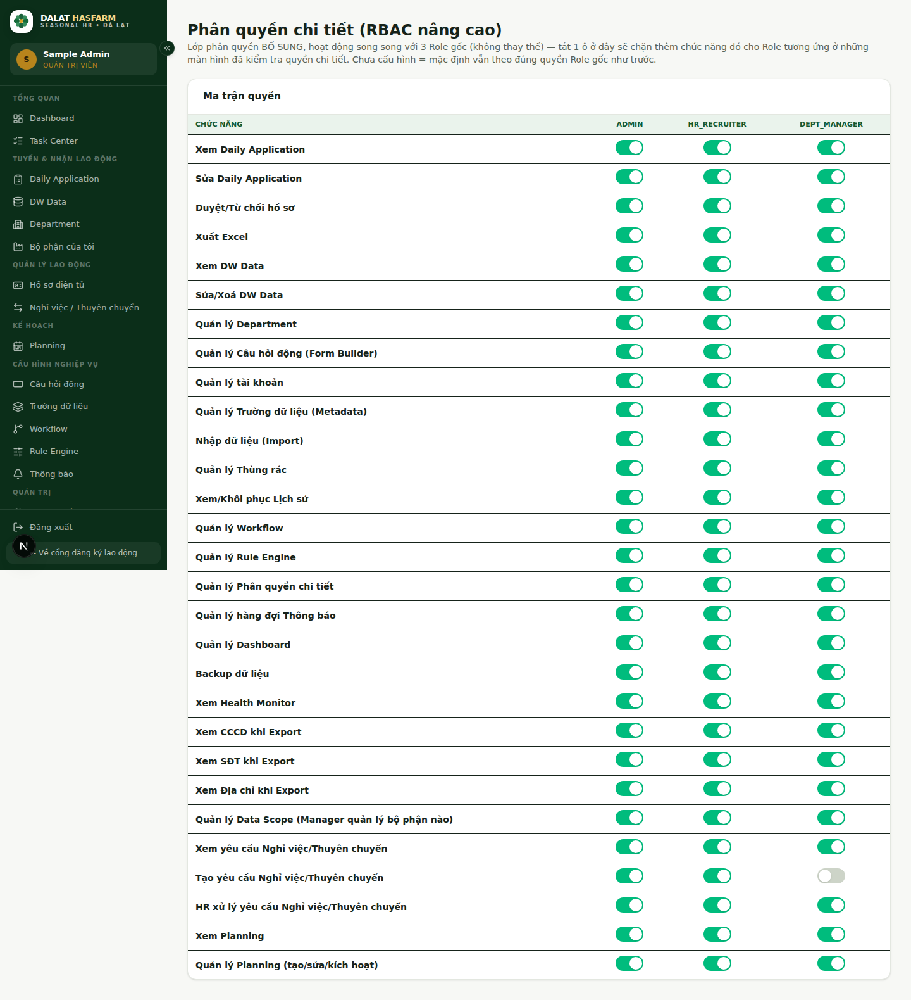
Dùng khi nào: cần bật/tắt một chức năng cụ thể cho một vai trò, mà không muốn đổi hẳn vai trò của người đó.
Ai được dùng: chỉ ADMIN.
Thao tác chính: bấm vào từng công tắc trong ma trận (hàng = chức năng, cột = vai trò) để bật/tắt ngay lập tức, không cần lưu riêng.
Quan trọng: Đây là lớp phân quyền bổ sung song song với 3 vai trò gốc — không thay thế vai trò. Một ô chưa từng được đụng tới mặc định luôn là cho phép (để admin không lỡ tay tự khoá cả hệ thống). Chỉ khi bạn chủ động tắt một ô, chức năng đó mới bị chặn cho đúng vai trò ở ô đó. Xem mô hình đầy đủ ở chương 10.
Data Scope
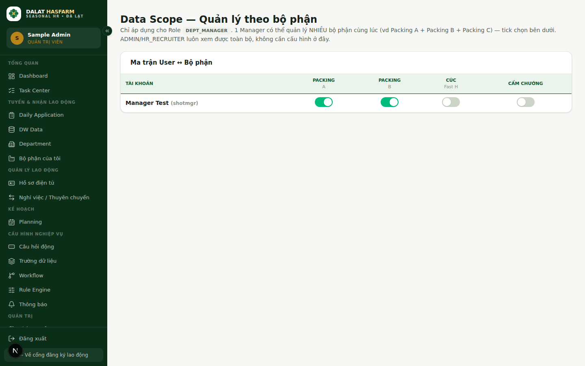
Dùng khi nào: giới hạn một Quản đốc bộ phận chỉ được xem dữ liệu của (các) bộ phận cụ thể.
Ai được dùng: chỉ ADMIN. Chỉ áp dụng cho vai trò DEPT_MANAGER — ADMIN/HR_RECRUITER luôn xem toàn bộ, không cần cấu hình ở đây.
Thao tác chính: bật công tắc ở ô giao giữa 1 tài khoản và 1 bộ phận để cấp quyền xem bộ phận đó — một tài khoản có thể được bật nhiều bộ phận cùng lúc.
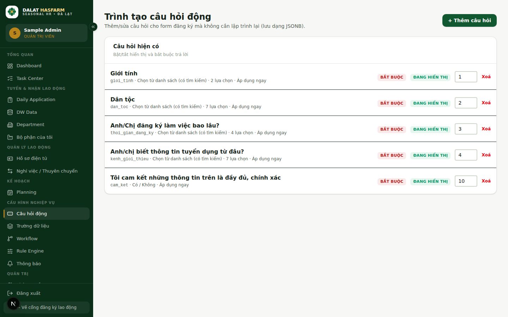
Dùng khi nào: cần thêm/sửa/xoá câu hỏi trên form đăng ký công khai mà không cần lập trình viên can thiệp.
Ai được dùng: ADMIN, HR_RECRUITER.
Thao tác chính: tạo câu hỏi mới với: Field Key (mã định danh nội bộ), Câu hỏi hiển thị, Loại (Nhập văn bản / Nhập số / Chọn từ danh sách), Bắt buộc trả lời hay không, Thứ tự hiển thị, Ngày áp dụng (câu hỏi chỉ hiện từ ngày này trở đi — form cũ không bị ảnh hưởng).
Lưu ý: Câu hỏi bắt buộc chỉ áp dụng cho người đăng ký lần đầu — lao động cũ xác nhận nhanh không phải trả lời lại các câu hỏi này.
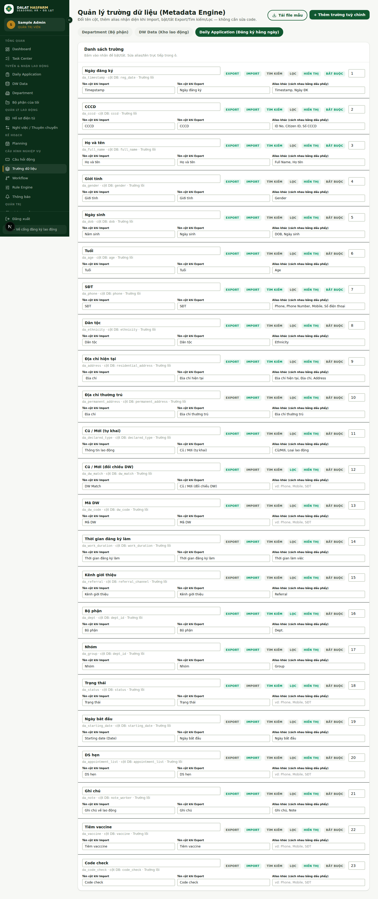
Dùng khi nào: đổi tên cột khi Import/Export, hoặc bật/tắt một cột trong ô "Tìm nhanh" — tất cả không cần sửa code.
Ai được dùng: chỉ ADMIN.
Thao tác chính: với mỗi trường, khai báo: Tên cột khi Import, Tên cột khi Export, Alias (các tên gọi khác cách nhau bằng dấu phẩy — giúp Import nhận diện file có tên cột khác chuẩn), bật/tắt Tìm kiếm, Lọc, Hiển thị, Bắt buộc, và Thứ tự cột.
Workflow
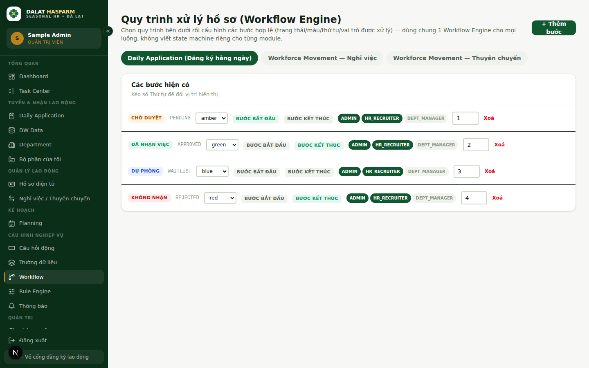
Dùng khi nào: thêm/sửa/đổi thứ tự các bước trạng thái cho Daily Application, Nghỉ việc, hoặc Thuyên chuyển — dùng chung một engine cho cả 3 luồng, không có state machine viết riêng cho từng module.
Ai được dùng: chỉ ADMIN.
Thao tác chính: chọn 1 trong 3 luồng (tab ở đầu trang), với mỗi bước khai báo: Nhãn hiển thị, Màu (gray/green/amber/red/blue/gold), có phải Bước bắt đầu/Bước kết thúc, Vai trò được xử lý bước này, Thứ tự.
Quan trọng: Đổi tên/màu một bước ở đây không cần cập nhật lại dữ liệu cũ — giá trị trạng thái lưu trong dữ liệu không đổi, Workflow chỉ mô tả "bước này hiển thị ra sao".
Rule Engine
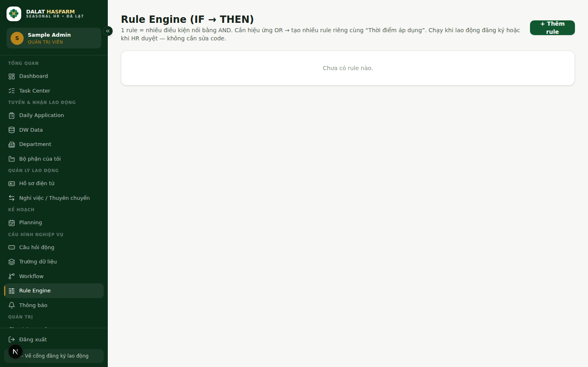
Dùng khi nào: cần tự động hoá kiểu "nếu ... thì ..." khi có đăng ký mới hoặc khi duyệt, mà không cần viết code — ví dụ "nếu tuổi dưới 18 thì tự động đánh dấu ghi chú cảnh báo".
Ai được dùng: chỉ ADMIN.
Thao tác chính: tạo rule gồm: Tên rule, Áp dụng cho (Daily Application), Thời điểm chạy (Khi đăng ký / Khi duyệt), một hoặc nhiều Điều kiện (nối bằng AND), và Hành động (Đổi trạng thái tự động, hoặc Gắn ghi chú cảnh báo).
Lưu ý: Muốn có hiệu ứng OR (hoặc điều kiện này, hoặc điều kiện kia) — tạo nhiều rule riêng thay vì gộp vào 1 rule, vì các điều kiện trong cùng 1 rule luôn được nối bằng AND.
Thông báo (Notifications)
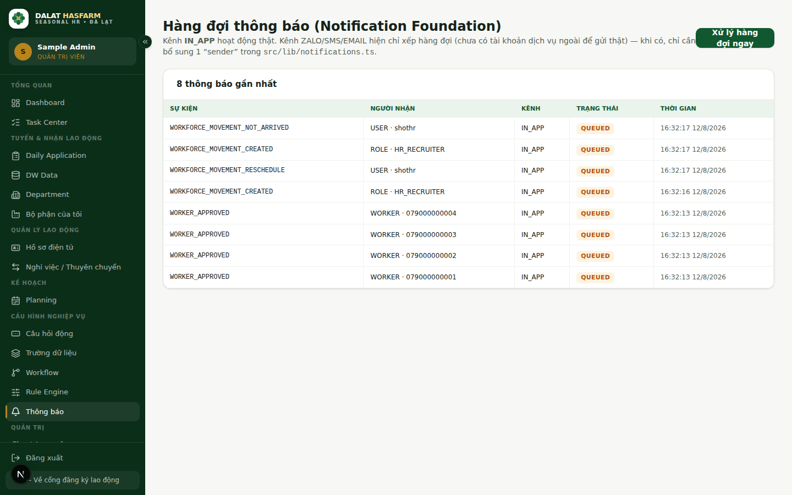
Dùng khi nào: theo dõi các sự kiện hệ thống đã tạo ra thông báo (duyệt hồ sơ, tạo yêu cầu nghỉ việc/thuyên chuyển...).
Ai được dùng: ADMIN, HR_RECRUITER.
Lưu ý quan trọng: Chỉ kênh IN_APP (thông báo trong hệ thống) hoạt động thật ở thời điểm hiện tại. Các kênh ZALO / SMS / EMAIL hiện chỉ xếp vào hàng đợi (trạng thái Đã xếp hàng) — hệ thống chưa thực sự gửi ra ngoài vì chưa kết nối tài khoản dịch vụ gửi tin. Không nên báo với người lao động/đồng nghiệp rằng họ "sẽ nhận SMS/Zalo tự động" cho tới khi tính năng này được xác nhận đã kết nối dịch vụ thật.
Nhập dữ liệu ban đầu (Import Data)
Xem chi tiết ở chương 11 — Import/Export.
Thùng rác (Recycle Bin)
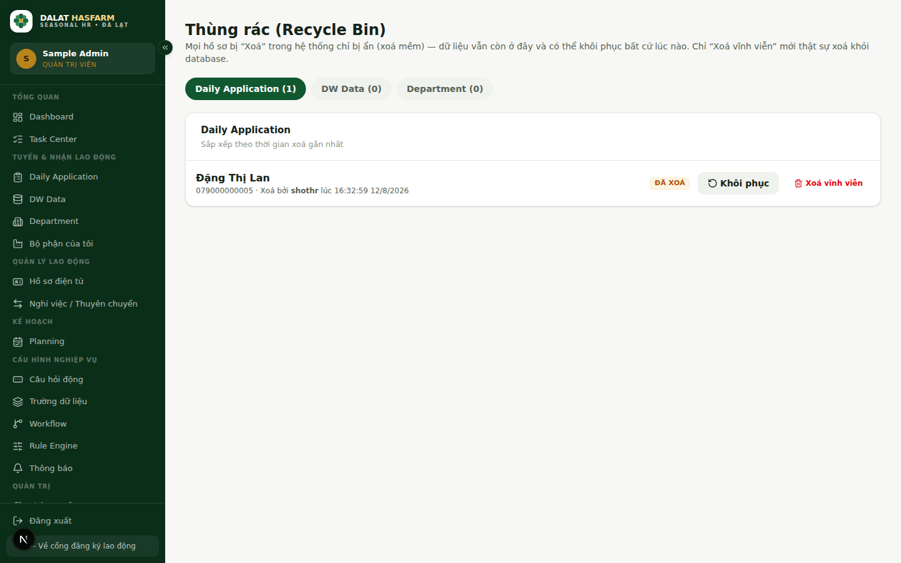
Dùng khi nào: khôi phục một bản ghi vừa bị xoá nhầm.
Ai được dùng: chỉ ADMIN.
Phạm vi: chỉ áp dụng cho 3 loại dữ liệu — Daily Application, DW Data, Department. (Không áp dụng cho Worker Profile hay Workforce Movement — các loại dữ liệu này hiện chưa có thao tác xoá trên giao diện.)
Thao tác chính: chọn tab loại dữ liệu, bấm Khôi phục để đưa bản ghi trở lại hoạt động bình thường, hoặc Xoá vĩnh viễn nếu chắc chắn không cần nữa.
Quan trọng: "Xoá vĩnh viễn" không thể hoàn tác. Chỉ dùng khi chắc chắn 100%.
Control Center (System)
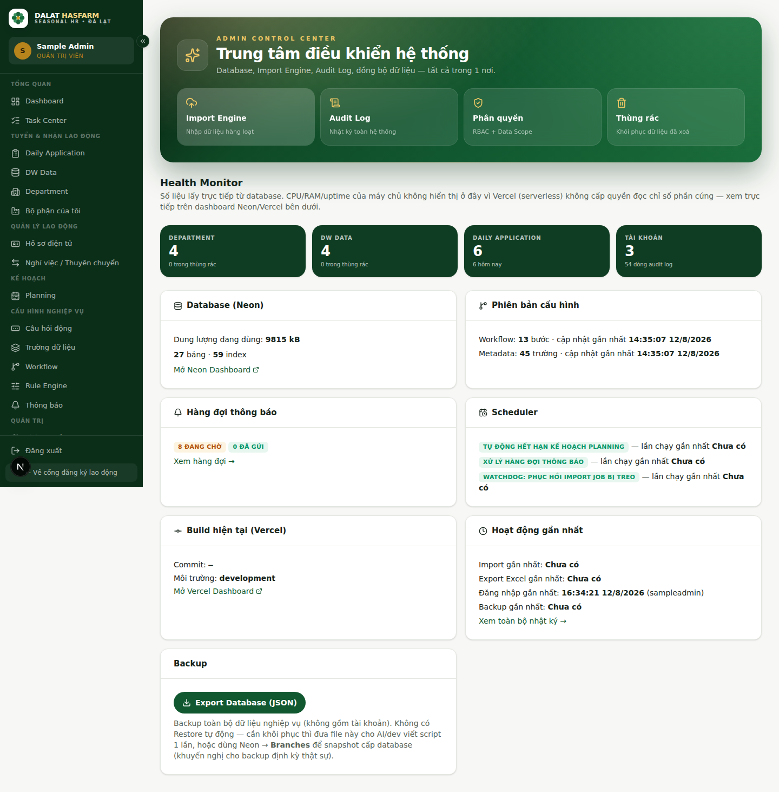
Dùng khi nào: kiểm tra sức khoẻ hệ thống định kỳ, hoặc tải bản sao lưu dữ liệu.
Ai được dùng: chỉ ADMIN.
Gồm: dung lượng & số bảng dữ liệu (Neon Database), phiên bản cấu hình Workflow/Metadata hiện tại, hàng đợi thông báo, lịch chạy các tác vụ nền (job tự động hết hạn Planning, xử lý hàng đợi thông báo, giám sát Import job bị treo), thông tin bản build đang chạy trên Vercel, hoạt động gần nhất, và nút Backup.
Lưu ý: Các chỉ số CPU/RAM/uptime không hiển thị ở đây vì Vercel (nền tảng serverless) không cấp quyền đọc chỉ số phần cứng máy chủ — cần xem trực tiếp trên Vercel Dashboard/Neon Dashboard (có link tắt ngay trong trang này).
Nhật ký hệ thống (Audit Log)
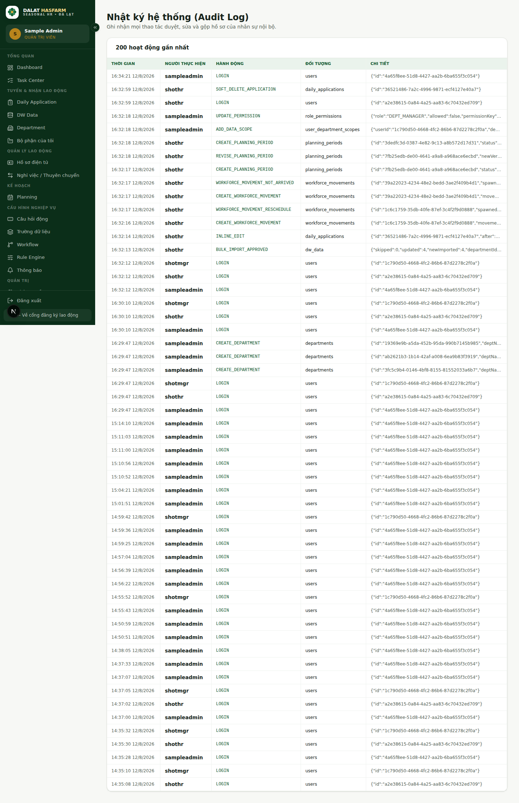
Dùng khi nào: tra cứu "ai đã làm gì, khi nào" — đăng nhập, duyệt hồ sơ, sửa dữ liệu, xoá, khôi phục...
Ai được dùng: chỉ ADMIN.
Hiển thị: 200 hoạt động gần nhất — Thời gian, Người thực hiện, Hành động, Đối tượng bị tác động, Chi tiết (dạng dữ liệu thô, hữu ích khi cần tra cứu chính xác giá trị trước/sau).
10. Permissions & Data Scope (Phân quyền dữ liệu)
Hệ thống phân quyền theo 3 lớp độc lập:

10.1 Lớp 1 — Role (Vai trò hệ thống)
3 vai trò cố định:
ADMIN: Quản trị viên hệ thống (toàn quyền cấu hình, quản trị người dùng, phân quyền).HR_RECRUITER: Nhân sự tuyển dụng (tiếp nhận Daily Application, xếp bộ phận, đối chiếu DW Data, quản lý Planning, duyệt Nghỉ việc/Thuyên chuyển).DEPT_MANAGER: Quản lý bộ phận (truy cập "Bộ phận của tôi", xem người tập nghề trong phạm vi Data Scope, báo nghỉ việc/thuyên chuyển).
10.2 Lớp 2 — Permission (Phân quyền chi tiết)
Admin có thể bật/tắt độc lập từng quyền chi tiết cho từng vai trò tại Phân quyền chi tiết (/admin/permissions).
- Mặc định hệ thống cho phép đầy đủ quyền chuẩn cho từng vai trò.
- Admin có thể tuỳ biến chặn hoặc mở rộng quyền mà không cần sửa mã nguồn.
10.3 Lớp 3 — Data Scope Redesign (Phân quyền theo cơ cấu tổ chức)
Data Scope trả lời câu hỏi "Người dùng được thao tác và xem dữ liệu Ở ĐÂU".
ADMIN và HR_RECRUITER: Xem toàn bộ hệ thống, không cần cấu hình Data Scope.DEPT_MANAGER: Chỉ xem và thao tác trên những bộ phận được Admin phân quyền tại Data Scope (/admin/data-scopes).
Giao diện quản lý Data Scope cho gần 100 bộ phận
Để quản lý số lượng lớn bộ phận mà không bị rối hay quá tải giao diện, hệ thống cung cấp quy trình phân quyền dạng bảng chuyên nghiệp:

- Danh sách người dùng: Màn hình chính hiển thị danh sách các tài khoản
DEPT_MANAGER, số lượng bộ phận đã được gán (ví dụ: Đã gán 17 bộ phận).
- Bảng phân quyền chi tiết (Drawer / Modal lớn): Khi bấm "Phân quyền bộ phận" trên một tài khoản, một bảng phân quyền mở rộng (70–80% màn hình) sẽ hiển thị với đầy đủ cây cơ cấu:
- Cột chọn: Checkbox từng dòng
- Location (Vùng / Trại)
- Division (Khối)
- Department (Bộ phận)
- Section (Phân khu / Mảng)
- Group (Tổ / Nhóm)
- Tên Tiếng Việt & Phụ trách tiếp nhận
- Bộ lọc & Tìm kiếm đa tầng:
- Ô tìm kiếm nhanh theo mã, tên bộ phận, người phụ trách.
- Các dropdown lọc độc lập: Lọc theo Location, Division, Department, Group.
- Thao tác chọn hàng loạt:
- Bấm "Chọn tất cả" để chọn toàn bộ các bộ phận đang hiển thị theo bộ lọc.
- Bấm "Bỏ chọn kết quả lọc" hoặc "Xoá toàn bộ đã chọn".
- Bộ đếm thời gian thực: Hiển thị rõ Đã chọn 17 / 71 bộ phận.
- Lưu an toàn (Batch Transaction):
- Không tự động lưu từng checkbox lẻ để tránh xung đột mạng.
- Bấm nút "Lưu phân quyền" ở thanh chân trang cố định (Sticky Footer) để cập nhật toàn bộ lựa chọn trong một giao dịch an toàn duy nhất.
11. Import / Export
11.1 Import dữ liệu
Ai dùng: chỉ ADMIN. Vào Sidebar → Nhập dữ liệu ban đầu.
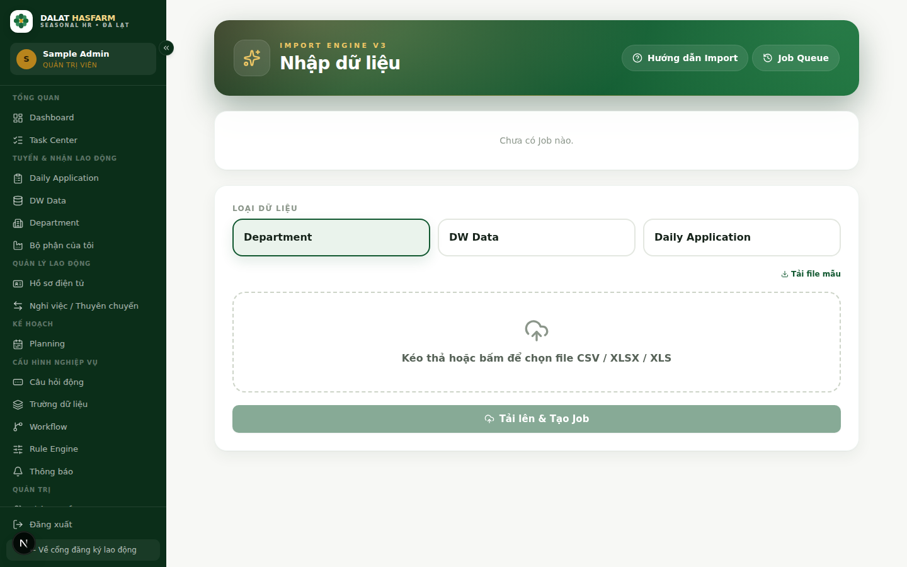
File nào được import?
3 loại dữ liệu: Department (bộ phận), DW Data (kho lao động gốc), Daily Application (đơn đăng ký). Chọn đúng loại trước khi tải file lên.
Định dạng
Chấp nhận CSV, XLSX, XLS. Bấm "Tải file mẫu" để lấy đúng cấu trúc cột trước khi chuẩn bị dữ liệu.
Alias (tên cột thay thế)
Nếu file của bạn dùng tên cột khác chuẩn (ví dụ file cũ ghi "Phone" thay vì "SĐT"), hệ thống vẫn nhận diện được nhờ Alias — danh sách tên gọi khác được Admin khai báo sẵn cho từng trường tại Trường dữ liệu (Metadata). Nếu file bị báo "không nhận diện được cột", kiểm tra và bổ sung alias tương ứng trước khi import lại.
Các bước xử lý của một Job Import
Sau khi tải file lên, hệ thống xử lý tuần tự theo 5 bước, chạy nền (bạn có thể đóng trang, quay lại sau để xem tiến trình):
- STAGING — nạp toàn bộ dòng dữ liệu thô vào hệ thống.
- VALIDATING — kiểm tra định dạng từng dòng, đánh dấu dòng lỗi/cảnh báo.
- MATCHING — (chỉ với Daily Application) đối chiếu với DW Data để xác định cũ/mới.
- MERGING — ghi chính thức vào dữ liệu hệ thống.
- BUILDING_STATS — tổng hợp số liệu cuối cùng.
Đọc kết quả Job
| Chỉ số |
Ý nghĩa |
| Tổng dòng |
Tổng số dòng trong file |
| Đã thêm mới |
Số bản ghi hoàn toàn mới |
| Đã cập nhật |
Số bản ghi đã có, được cập nhật thông tin |
| Trùng lặp |
Số dòng bị bỏ qua vì đã tồn tại giống hệt |
| Cảnh báo |
Dòng import được nhưng có điểm cần chú ý |
| Lỗi |
Dòng không import được — xem log job để biết lý do cụ thể từng dòng |
Mẹo: Nếu tải nhầm đúng file đã import trước đó (checksum trùng), hệ thống sẽ cảnh báo tránh việc bạn vô tình import trùng dữ liệu 2 lần.
Lưu ý: Nếu một Job bị treo do sự cố mạng/máy chủ, hệ thống có một tác vụ nền tự kiểm tra và khôi phục Job — bạn không cần tự huỷ và làm lại ngay lập tức, hãy đợi vài phút và kiểm tra lại trạng thái Job trước.
11.2 Export dữ liệu
Nút "Xuất Excel" có ở Daily Application, "Bộ phận của tôi", và một số màn hình khác — luôn xuất theo đúng khoảng ngày và bộ phận đang chọn, không phải toàn bộ dữ liệu hệ thống. Các bộ lọc khác trên màn hình (Trạng thái, DW Data, từ khoá tìm kiếm) không được mang theo khi xuất — xem lưu ý chi tiết ở chương 4.
Che thông tin cá nhân khi xuất Excel
Quan trọng: CCCD, Số điện thoại, Địa chỉ khi xuất Excel có thể bị che (mask) tuỳ theo quyền của vai trò bạn đang dùng:
| Quyền |
Nếu được phép |
Nếu không được phép |
privacy.view_cccd |
CCCD xuất đầy đủ |
Hiện •••• (ẩn theo quyền) |
privacy.view_phone |
SĐT xuất đầy đủ |
Hiện •••• (ẩn theo quyền) |
privacy.view_address |
Địa chỉ xuất đầy đủ |
Hiện •••• (ẩn theo quyền) |
3 quyền này cấu hình tại Phân quyền chi tiết — mặc định cho phép cho tới khi Admin chủ động tắt.
Quan trọng: Việc che thông tin chỉ áp dụng cho file xuất ra. Nếu bạn cần một bản ghi CCCD/SĐT/Địa chỉ đầy đủ, hãy vào đúng hồ sơ trên hệ thống thay vì tìm cách "gỡ mask" trên file Excel — không có thao tác nào trên giao diện được thiết kế để bỏ qua quy tắc che thông tin này.
12. Backup
Ai dùng: chỉ ADMIN. Vào Control Center (/admin/system) → mục Backup.
12.1 Backup dùng để làm gì?
Nút "Export Database (JSON)" tải về toàn bộ dữ liệu nghiệp vụ của hệ thống dưới dạng 1 file JSON — dùng làm bản sao lưu thủ công, hoặc để đưa cho lập trình viên/AI viết script khôi phục khi cần.
12.2 Phạm vi dữ liệu
Bao gồm: Department, DW Data, Daily Application, Worker Profile, Employment Session, Planning (kế hoạch + phân bổ), Workforce Movement, Data Scope, Phân quyền chi tiết, Form Builder, Trường dữ liệu, Workflow, Rule Engine, Thông báo, Nhật ký hệ thống.
Quan trọng: File backup KHÔNG bao gồm bảng tài khoản (users) — vì bảng này chứa mật khẩu đã mã hoá (password hash). Đây là quyết định bảo mật có chủ đích, không phải thiếu sót. Nếu cần sao lưu danh sách tài khoản, ghi chú lại thủ công tại module Users.
12.3 Đây KHÔNG phải tính năng Restore tự động
Quan trọng: Hệ thống hiện chưa có nút "Khôi phục" tự động từ file backup này. Muốn khôi phục dữ liệu từ file JSON đã tải, cần đưa file cho lập trình viên/AI viết script import thủ công một lần.
Với nhu cầu sao lưu định kỳ thật sự / khôi phục về đúng một thời điểm trong quá khứ (point-in-time recovery), tài liệu chính thức khuyến nghị dùng Neon Branches (chức năng chụp nhanh cấp cơ sở dữ liệu của nhà cung cấp Neon, có link tắt ngay tại Control Center) — vì cách này chụp lại đầy đủ cả index/ràng buộc dữ liệu mà file JSON xuất từ đây không thay thế được.
12.4 Khi nào nên backup?
- Trước khi thực hiện một đợt Import dữ liệu lớn.
- Trước khi Admin thực hiện các thay đổi cấu hình lớn (đổi Workflow, xoá hàng loạt ở Recycle Bin...).
- Định kỳ theo chu kỳ công ty quy định (ví dụ hàng tuần/hàng tháng) — xem gợi ý ở Checklist vận hành.
13. Tra cứu công khai (Public Lookup)
Đây là trang dành cho người lao động, không cần tài khoản đăng nhập. Có 2 trang công khai: Trang đăng ký (nộp đơn) và Trang tra cứu (xem kết quả).
13.1 Trang đăng ký
Trang chủ hệ thống (/) — nơi người lao động tự đăng ký thông tin tập nghề.
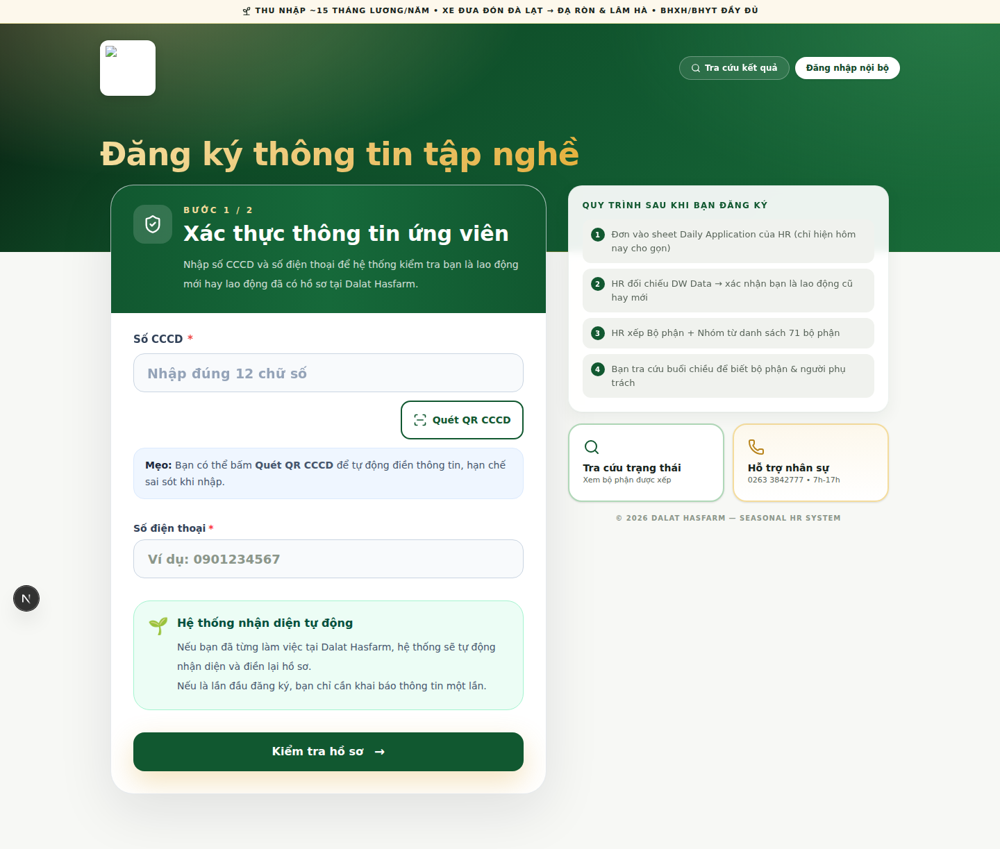
- Nhập Số CCCD (bắt buộc, đúng 12 chữ số) và Số điện thoại.
- Có thể bấm "Quét QR CCCD" để tự động điền thông tin từ mã QR trên thẻ CCCD, hạn chế gõ tay sai sót.
- Hệ thống tự kiểm tra: nếu bạn đã từng làm việc tại Dalat Hasfarm, thông tin sẽ tự động nhận diện và điền lại hồ sơ cũ — không phải khai lại từ đầu; nếu là lần đầu, bạn cần khai đầy đủ các câu hỏi bắt buộc (Giới tính, Dân tộc, Thời gian đăng ký làm, Kênh giới thiệu, và cam kết thông tin chính xác).
- Nộp đơn.
Lưu ý: Mỗi số CCCD chỉ được đăng ký 1 lần trong cùng 1 ngày. Đăng ký lần thứ hai trong ngày sẽ báo "Đã xác nhận đăng ký hôm nay" — đây không phải lỗi, đăng ký đầu tiên trong ngày đã được ghi nhận.
13.2 Trang tra cứu kết quả
Vào /lookup (hoặc bấm "Tra cứu kết quả" từ trang đăng ký).
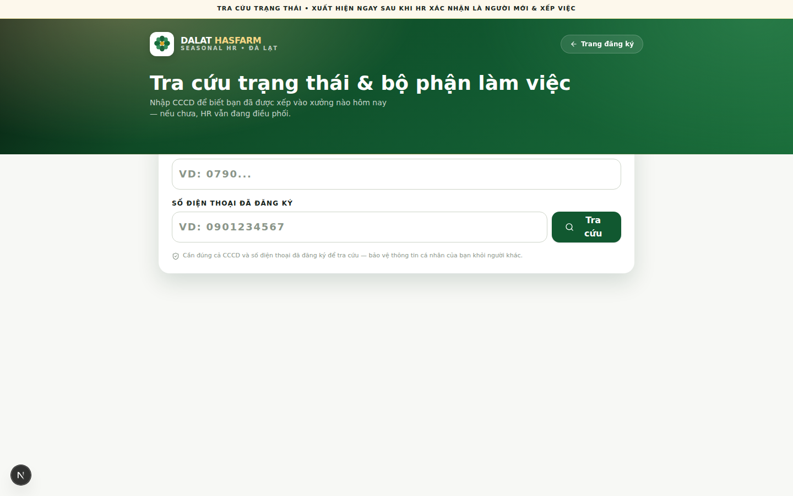
- Nhập Số CCCD đã dùng để đăng ký.
- Nhập Số điện thoại đã đăng ký.
- Bấm Tra cứu.
Kết quả tìm thấy
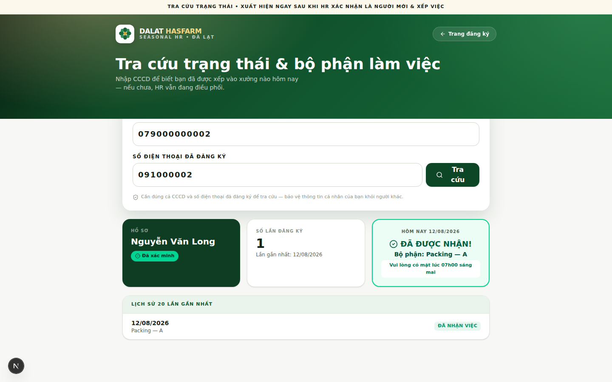
Hiện: hồ sơ đã xác minh hay chưa, tổng số lần đăng ký, và kết quả hôm nay — nếu đã được nhận, hệ thống hiện rõ bộ phận được xếp và giờ hẹn có mặt.
Không tìm thấy kết quả
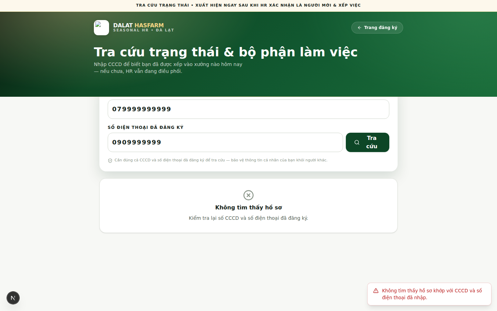
13.3 Vì sao cần cả CCCD lẫn số điện thoại?
Quan trọng: Hệ thống yêu cầu nhập đúng cả hai thông tin (CCCD + số điện thoại đã đăng ký) mới cho xem kết quả — đây là cơ chế xác minh 2 yếu tố để bảo vệ thông tin cá nhân của bạn khỏi bị người khác dò xem bằng cách chỉ cần biết số CCCD. Trang tra cứu này không hiển thị bất kỳ dữ liệu nội bộ nào khác (không có tên bộ phận đầy đủ danh sách, không có thông tin lao động khác, không có dữ liệu quản trị).
Nếu bạn chắc chắn cả hai thông tin đều đúng mà vẫn báo "Không tìm thấy hồ sơ", có thể do:
- CCCD hoặc số điện thoại gõ sai khi đăng ký ban đầu — liên hệ HR để kiểm tra và sửa lại.
- Hồ sơ vừa nộp chưa được hệ thống xử lý xong (hiếm khi xảy ra, đợi vài phút và thử lại).
14. Hướng dẫn dùng trên điện thoại
Hệ thống hoạt động tốt trên điện thoại (đã kiểm tra ở độ rộng 390px — kích thước phổ biến của điện thoại thông thường). Một số thao tác có khác biệt nhỏ so với máy tính.
Trên di động, Sidebar được ẩn thành menu trượt (drawer). Bấm nút ☰ ở góc trên-trái để mở, bấm dấu ✕ hoặc chạm ra ngoài để đóng.
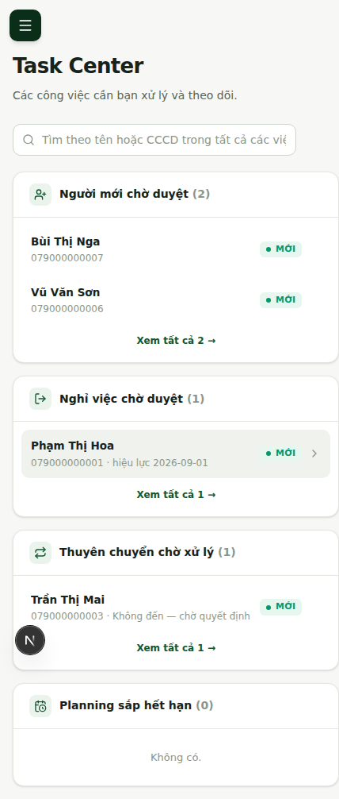 |
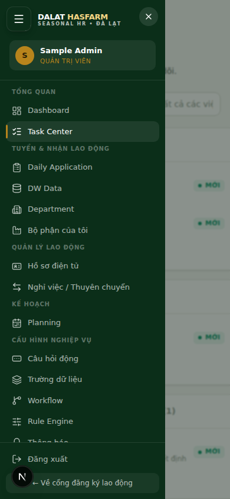 |
14.2 Cuộn bảng dữ liệu
Các bảng nhiều cột (Daily Application, Department...) sẽ cuộn ngang trên màn hình hẹp thay vì bị vỡ layout hay ẩn bớt cột. Vuốt sang trái/phải trên bảng để xem hết các cột.
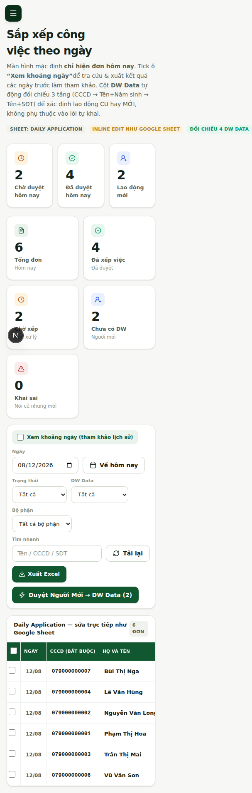
Lưu ý: Không có cột dữ liệu nghiệp vụ nào bị ẩn đi trên di động để "cho gọn" — mọi thông tin đều xem được, chỉ khác cách cuộn.
14.3 Thao tác Task Center trên di động
Task Center hiển thị các thẻ nhóm việc xếp chồng theo chiều dọc thay vì 2 cột như trên máy tính — thao tác tìm kiếm, xem chi tiết, bấm "Xem tất cả" hoạt động giống hệt bản desktop.
14.4 Tra cứu công khai trên di động
Trang tra cứu và trang đăng ký công khai được thiết kế ưu tiên cho di động (nhiều người lao động dùng điện thoại là chính) — form nhập liệu lớn, dễ chạm, không cần zoom.
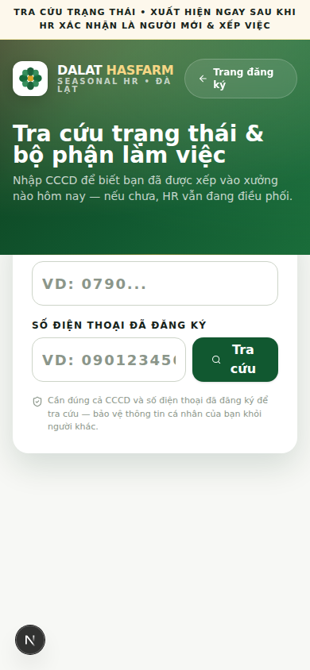 |
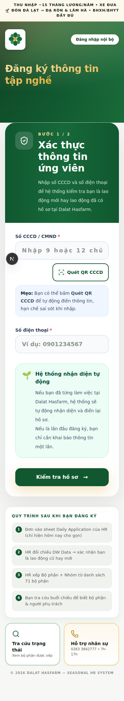 |
15. Thói quen làm việc hiệu quả
5 thói quen giúp bạn thao tác nhanh hơn và ít sai sót hơn:
Mở Task Center đầu ngày. Đây là nơi tổng hợp mọi việc đang chờ — kiểm tra ở đây trước, thay vì đoán xem hôm nay có gì cần làm bằng cách mở lần lượt từng module.
Dùng ô tìm kiếm thay vì cuộn tay. Với danh sách dài (Daily Application nhiều đơn, DW Data hàng nghìn dòng), gõ CCCD hoặc tên vào ô tìm kiếm luôn nhanh và chính xác hơn cuộn/dò bằng mắt.
Kiểm tra đúng bộ phận trước khi duyệt. Xếp nhầm bộ phận là lỗi phổ biến và khó phát hiện ngay — xem kỹ tên Dept. + Group trước khi bấm duyệt, đặc biệt khi hai bộ phận có tên gần giống nhau (ví dụ Packing – A và Packing – B).
Ghi Ghi chú/Lý do rõ ràng khi tạo yêu cầu. Khi tạo yêu cầu Nghỉ việc/Thuyên chuyển, ghi lý do cụ thể — người xử lý sau (có thể không phải bạn) sẽ cần thông tin này, và nó cũng được lưu vĩnh viễn trong lịch sử.
Đăng xuất khi dùng máy dùng chung. Đặc biệt quan trọng ở máy tính văn phòng nhiều người cùng dùng — không đăng xuất nghĩa là người sau có thể thao tác dưới tên bạn.
16. Lỗi thường gặp khi thao tác
| Lỗi |
Vì sao xảy ra |
Cách xử lý |
| Chọn sai bộ phận khi duyệt |
Hai bộ phận tên gần giống nhau (Packing – A / Packing – B), hoặc chọn nhanh không nhìn kỹ dropdown |
Kiểm tra lại tên đầy đủ Dept. + Group trước khi bấm duyệt; nếu đã lỡ duyệt sai, sửa lại cột "Bộ phận + Nhóm" ngay trên bảng Daily Application (nếu vẫn còn trong ngày) hoặc tạo yêu cầu Thuyên chuyển để chuyển đúng bộ phận |
| Nhập sai CCCD |
Gõ tay thay vì quét QR, nhập thiếu hoặc không đúng 12 chữ số |
Sửa trực tiếp tại DW Data hoặc Daily Application nếu phát hiện sớm — hệ thống sẽ tự đồng bộ lại các hồ sơ liên quan sang CCCD đúng. Luôn kiểm tra kỹ trước khi duyệt hàng loạt |
| Tạo Planning bị chồng lấn thời gian |
Cố tạo 2 kế hoạch Đang áp dụng cùng bộ phận + nhóm với khoảng ngày trùng nhau |
Hệ thống sẽ từ chối tạo — dùng chức năng "Sửa (tạo version mới)" trên kế hoạch hiện có thay vì tạo kế hoạch mới chồng lên |
| Tạo Workforce Movement nhầm người lao động |
Tìm theo tên trùng, không kiểm tra kỹ CCCD trước khi xác nhận |
Luôn đọc kỹ tên + CCCD hiển thị sau khi tìm kiếm trước khi bấm "Gửi yêu cầu"; nếu đã lỡ tạo nhầm, dùng nút "Từ chối"/"Huỷ" tương ứng để đóng yêu cầu sai rồi tạo lại đúng |
| Dùng chung tài khoản với đồng nghiệp |
Tiện lợi trước mắt (không phải đăng nhập riêng) |
Không nên — mọi thao tác ghi lại đúng tên tài khoản thực hiện; dùng chung làm mất khả năng truy vết trách nhiệm và vi phạm nguyên tắc bảo mật cơ bản |
| Tưởng "không thấy menu" là lỗi hệ thống |
Không hiểu rằng menu hiển thị theo Role + Permission |
Đây gần như luôn là đúng thiết kế, không phải lỗi — xem chương 10 để tự kiểm tra, hoặc hỏi Admin nếu vẫn không chắc |
17. Xử lý sự cố (Troubleshooting)
| Vấn đề |
Nguyên nhân có thể |
Cách xử lý |
| Không đăng nhập được |
Sai tên tài khoản/mật khẩu; tài khoản bị Admin khoá; nhập sai quá 5 lần nên bị tạm khoá 15 phút |
Kiểm tra lại thông tin, thử lại sau vài phút nếu bị báo "Quá nhiều lần đăng nhập sai"; nếu chắc chắn thông tin đúng, liên hệ Admin kiểm tra trạng thái tài khoản tại module Users |
| Không thấy một menu nào đó |
Vai trò của bạn không có menu này; hoặc quyền tương ứng đang bị tắt |
Đọc chương 10; nếu vẫn không rõ, hỏi Admin kiểm tra tại Phân quyền chi tiết |
| Không tìm thấy một lao động cụ thể |
Người đó chưa từng đăng ký qua hệ thống; CCCD tra cứu không khớp với CCCD đã lưu; hoặc bạn là Quản đốc bộ phận và người đó không thuộc phạm vi Data Scope của bạn |
Kiểm tra lại CCCD; thử tìm trên DW Data (ADMIN/HR_RECRUITER); nếu là Quản đốc bộ phận, xác nhận với Admin về Data Scope đã gán cho bạn |
| Không tạo được yêu cầu Nghỉ việc/Thuyên chuyển |
Chưa tìm và chọn đúng lao động trước; thiếu Bộ phận mới (bắt buộc với Thuyên chuyển) hoặc thiếu Ngày hiệu lực; hoặc quyền workforce_movements.create đang bị tắt cho vai trò của bạn |
Kiểm tra đã điền đủ các trường bắt buộc (*); nếu vẫn không được, hỏi Admin kiểm tra quyền |
| Không tạo được Planning mới (báo lỗi chồng lấn) |
Đã có 1 kế hoạch Đang áp dụng cùng bộ phận + nhóm với khoảng ngày trùng |
Dùng "Sửa (tạo version mới)" trên kế hoạch hiện có, hoặc chọn khoảng ngày khác không trùng |
File Export thiếu CCCD/SĐT/Địa chỉ (hiện ••••) |
Vai trò của bạn đang bị tắt quyền privacy.view_cccd / privacy.view_phone / privacy.view_address |
Đây là hành vi đúng theo thiết kế bảo mật, không phải lỗi — liên hệ Admin nếu công việc của bạn thực sự cần xem đầy đủ các trường này |
| Đang thao tác thì bị đẩy về trang đăng nhập |
Phiên đăng nhập đã hết hạn, hoặc tài khoản vừa bị đổi mật khẩu/khoá ở nơi khác |
Đăng nhập lại; nếu việc này xảy ra thường xuyên bất thường, báo Admin kiểm tra |
| Task Center báo lỗi hoặc không tải được |
Mất kết nối mạng tạm thời, lỗi máy chủ, hoặc phiên đăng nhập hết hạn |
Bấm Thử lại; nếu báo hết quyền/hết phiên, làm theo hướng dẫn tương ứng trên màn hình |
| Trang tra cứu công khai báo "Không tìm thấy hồ sơ" |
CCCD hoặc số điện thoại nhập không khớp với lúc đăng ký; hoặc hồ sơ chưa được xử lý xong |
Kiểm tra lại chính xác cả 2 thông tin; nếu chắc chắn đúng, liên hệ HR để kiểm tra hồ sơ |
Không tìm thấy sự cố của bạn ở đây? Xem tiếp 18 — FAQ hoặc liên hệ Admin/bộ phận IT nội bộ.
18. Câu hỏi thường gặp (FAQ)
1. Vì sao tôi không thấy menu Admin (Users, Permissions, Data Scope...)?
Vì tài khoản của bạn không có vai trò ADMIN. Các mục này chỉ hiện với vai trò Quản trị viên — đây là thiết kế bảo mật, không phải lỗi hiển thị.
2. Vì sao tôi chỉ thấy một số bộ phận chứ không phải tất cả?
Nếu bạn là Quản lý bộ phận (DEPT_MANAGER), bạn chỉ xem được (các) bộ phận được Admin gán riêng cho tài khoản của mình tại Data Scope. ADMIN và HR_RECRUITER luôn xem toàn bộ. Xem chương 10.
3. Tôi có thể sửa CCCD của một hồ sơ đã đăng ký không?
Có, nếu bạn có quyền registrations.edit/workers.edit — sửa trực tiếp tại Daily Application hoặc DW Data. Hệ thống sẽ tự đồng bộ CCCD mới sang các hồ sơ liên quan.
4. Xoá dữ liệu trên hệ thống có mất vĩnh viễn ngay không?
Không. Xoá thông thường (Department, DW Data, Daily Application) là xoá mềm — dữ liệu chuyển vào Thùng rác và khôi phục được bất cứ lúc nào. Chỉ khi Admin chủ động bấm "Xoá vĩnh viễn" trong Thùng rác thì dữ liệu mới thực sự mất, không thể hoàn tác.
5. Người tập nghề cũ quay lại làm việc thì hồ sơ của họ ra sao?
Hệ thống tự nhận diện qua CCCD/tên+năm sinh/tên+SĐT và gắn vào đúng Hồ sơ Tập nghề (Internship Profile) cũ — không tạo người mới. Xem chương 5.
6. Planning hết hạn thì dữ liệu có bị xoá không?
Không. Kế hoạch hết hạn (Expired) vẫn giữ nguyên trong hệ thống, xem lại được ở tab "Đã hết hạn" — chỉ không còn tính là "đang áp dụng" nữa.
7. Planning có cho phép tạo nhiều kế hoạch trùng thời gian không?
Có. Hệ thống cho phép tạo một Kế hoạch gốc và nhiều Yêu cầu bổ sung (Bổ sung 1, Bổ sung 2...) trong cùng một khoảng thời gian cho một bộ phận. Số lượng Cần tuyển được tính tự động phân tách theo Nam và Nữ. Xem chương 7.
8. Tôi có thể xuất Excel toàn bộ dữ liệu hệ thống không?
Không qua nút "Xuất Excel" thông thường — nút này chỉ xuất đúng dữ liệu đang lọc/hiển thị trên màn hình. Muốn có bản sao lưu toàn bộ dữ liệu nghiệp vụ, dùng chức năng Backup (chỉ Admin) — xem chương 12.
9. Vì sao CCCD/SĐT trong file Excel xuất ra bị ẩn (hiện dấu chấm)?
Vì vai trò của bạn đang không có quyền privacy.view_cccd/privacy.view_phone — đây là quy tắc bảo vệ thông tin cá nhân, do Admin cấu hình tại Phân quyền chi tiết.
10. Tài khoản của tôi bị khoá thì có mất dữ liệu lịch sử không?
Không. Khoá tài khoản chỉ chặn đăng nhập — mọi hành động đã thực hiện trước đó vẫn được giữ nguyên trong Nhật ký hệ thống.
11. Tôi có thể dùng chung một tài khoản với đồng nghiệp không?
Không nên. Mọi thao tác được ghi lại theo đúng tên tài khoản thực hiện — dùng chung làm mất khả năng xác định ai đã làm gì khi cần tra soát.
12. Người đăng ký Tập nghề có tự xem được lịch sử làm việc của mình không?
Không có tính năng đăng nhập cho người đăng ký. Họ chỉ tra cứu được kết quả xếp việc hôm nay và tổng số lần đăng ký qua trang Tra cứu công khai — không xem được toàn bộ hồ sơ nội bộ.
13. Kênh thông báo Zalo/SMS/Email đã hoạt động chưa?
Chưa. Hiện chỉ kênh IN_APP (thông báo trong hệ thống) hoạt động thật; Zalo/SMS/Email mới dừng ở bước xếp hàng đợi, chưa thực sự gửi ra ngoài.
14. Tôi có thể khôi phục hệ thống về đúng một ngày trong quá khứ không?
Chức năng Backup hiện tại chỉ xuất file JSON để tham khảo/khôi phục thủ công qua script — không có nút "Khôi phục về ngày X" tự động trên giao diện. Muốn khôi phục điểm-trong-thời-gian thực sự, dùng Neon Branches (xem chương 12).
15. Vì sao hồ sơ tôi vừa duyệt lại đổi từ nhãn "MỚI" sang "CŨ"?
Vì khi bạn duyệt một người đang gắn nhãn MỚI, hệ thống tự thêm họ vào DW Data — từ thời điểm đó họ chính thức "đã có trong hệ thống", nên nhãn chuyển sang CŨ. Đây là hành vi đúng.
16. Tôi có thể xem được mật khẩu của tài khoản khác không?
Không, kể cả Admin. Mật khẩu chỉ lưu dưới dạng đã mã hoá một chiều — không ai xem lại được mật khẩu gốc, kể cả trong file Backup.
19. Thuật ngữ (Glossary)
| Thuật ngữ |
Giải thích chuẩn nghiệp vụ |
| Tập nghề (Internship) |
Chương trình tiếp nhận và đào tạo thực tập / tập nghề thời vụ tại Dalat Hasfarm (thay thế cho cách gọi "Worker / Công nhân"). |
| Hồ sơ Tập nghề (Internship Profile) |
Hồ sơ điện tử duy nhất của một người tập nghề, gộp toàn bộ các lần đăng ký và đợt tập nghề qua các năm. |
| Đợt Tập nghề (Internship Session) |
Một đợt tập nghề cụ thể của một người, gắn liền với một bộ phận và khoảng thời gian làm việc. |
| Daily Application |
Sổ ghi nhận đơn đăng ký tập nghề hằng ngày — nơi HR tiếp nhận, đối chiếu DW Data và xếp bộ phận. |
| DW Data |
Nguồn dữ liệu đối chiếu Tập nghề và lịch sử công ty — dùng để xác định người cũ / người mới. |
| Cơ cấu tổ chức (Org Hierarchy) |
Cấu trúc phân cấp 5 tầng chuẩn của Dalat Hasfarm: Location → Division → Department → Section → Group. |
| Planning (Kế hoạch nhu cầu) |
Quản lý nhu cầu tuyển dụng tập nghề theo giai đoạn và theo giới tính (Nam / Nữ) cho từng bộ phận. |
| Nhu cầu nhân lực (Demand) |
Số lượng người tập nghề cần tiếp nhận, phân tách Nhu cầu Nam và Nhu cầu Nữ (thay thế cho thuật ngữ Quota cũ). |
| Kế hoạch gốc (Original) |
Kế hoạch nhu cầu nhân lực ban đầu của một đợt tập nghề. |
| Yêu cầu bổ sung (Supplement) |
Yêu cầu tăng thêm nhu cầu nhân lực trong cùng khoảng thời gian với kế hoạch gốc (Bổ sung 1, Bổ sung 2...). |
| Phân bổ (Allocated) |
Số lượng người tập nghề thực tế đã được HR xếp việc vào kế hoạch. |
| Nghỉ việc (Resigned) |
Số lượng người tập nghề thuộc kế hoạch đã có quyết định nghỉ việc có hiệu lực. |
| Cần tuyển (Recruitment Needed) |
Số lượng nhân sự cần tiếp tục tuyển dụng: $\text{Cần tuyển} = \max(0, \text{Nhu cầu} - \text{Phân bổ} + \text{Nghỉ việc})$. |
| Bộ phận của tôi (My Department) |
Cổng dành cho Quản lý bộ phận, mặc định hiển thị toàn bộ người tập nghề trong Data Scope, hỗ trợ chọn nhiều người và báo nghỉ hàng loạt. |
| Data Scope |
Bảng phân quyền danh mục bộ phận thuộc cơ cấu tổ chức mà tài khoản Quản lý bộ phận được phép xem và thao tác. |
| Nghỉ việc / Thuyên chuyển (Movement) |
Nghiệp vụ xử lý khi người tập nghề kết thúc đợt tập nghề hoặc chuyển sang bộ phận khác. |
| Task Center |
Màn hình trung tâm tổng hợp mọi công việc đang chờ xử lý của người dùng. |
| Audit Log (Nhật ký hệ thống) |
Bản ghi lại "ai đã làm gì, lúc nào" trên toàn hệ thống để phục vụ kiểm toán và truy vết. |
| Recycle Bin (Thùng rác) |
Nơi lưu tạm các dữ liệu đã bị xoá mềm để có thể khôi phục lại khi cần. |
20. Quy trình xử lý tình huống (SOP)
SOP 1 — Lao động mới đăng ký lần đầu
- Tình huống: Một người chưa từng làm việc tại Dalat Hasfarm, đăng ký tập nghề lần đầu.
- Ai xử lý: Người lao động (tự đăng ký) → HR duyệt.
- Các bước:
- Người lao động vào trang đăng ký công khai, khai CCCD/SĐT và trả lời các câu hỏi bắt buộc.
- Hệ thống đối chiếu DW Data, không tìm thấy → gắn nhãn MỚI.
- HR mở Daily Application, thấy hồ sơ ở trạng thái Chờ duyệt, nhãn MỚI.
- HR kiểm tra thông tin, xếp Bộ phận + Nhóm, đổi trạng thái sang Đã nhận việc (dùng nút đơn lẻ hoặc "Duyệt Người Mới → DW Data" nếu duyệt hàng loạt).
- Kết quả mong đợi: Hồ sơ chuyển Đã nhận việc; người này tự động được thêm vào DW Data (nhãn đổi sang CŨ); Worker Profile + Employment Session đầu tiên được tạo.
- Lỗi thường gặp: Duyệt nhầm bộ phận; quên kiểm tra dấu cảnh báo ⚠ nếu người này tự khai "đã từng làm" nhưng không khớp DW Data.
SOP 2 — Lao động cũ quay lại
- Tình huống: Một người đã từng làm việc trước đây, nay đăng ký lại.
- Ai xử lý: Người lao động → HR xác nhận.
- Các bước:
- Người lao động nhập CCCD — nếu trùng dữ liệu cũ, hệ thống tự động điền lại thông tin, không cần khai lại từ đầu.
- Hồ sơ được gắn nhãn CŨ ngay từ khi đăng ký.
- HR xác nhận nhanh, xếp bộ phận (có thể khác bộ phận lần trước).
- Kết quả mong đợi: Một Employment Session mới được thêm vào đúng Worker Profile cũ của người này — không tạo hồ sơ trùng.
- Lỗi thường gặp: Nhầm tưởng hệ thống tạo "người mới" — kiểm tra tại Hồ sơ điện tử để thấy rõ toàn bộ lịch sử làm việc gộp vào 1 hồ sơ.
SOP 3 — HR duyệt và phân bộ phận
- Tình huống: Cuối buổi sáng, còn nhiều hồ sơ Chờ duyệt cần xử lý nhanh.
- Ai xử lý: HR Tuyển dụng.
- Các bước:
- Mở Daily Application, lọc Trạng thái = "Chờ duyệt" nếu cần.
- Tick chọn nhiều hồ sơ cùng lúc (thanh hành động xuất hiện khi có hồ sơ được chọn).
- Bấm "Duyệt & Nhập DW Data" (nếu duyệt) hoặc "Từ chối".
- Kết quả mong đợi: Toàn bộ hồ sơ được chọn chuyển trạng thái cùng lúc; kết quả chi tiết (số thành công/thất bại + lý do) hiện ngay sau khi xử lý.
- Lỗi thường gặp: Chọn nhầm cả hồ sơ chưa xếp bộ phận rồi duyệt — kiểm tra cột Bộ phận + Nhóm trước khi duyệt hàng loạt.
SOP 4 — Người lao động đổi bộ phận
- Tình huống: Một lao động đang làm ở bộ phận A cần chuyển sang bộ phận B.
- Ai xử lý: Người tạo yêu cầu (HR hoặc Quản đốc, tuỳ quyền) → HR xác nhận.
- Các bước: Xem chi tiết đầy đủ ở chương 8.
- Kết quả mong đợi: Yêu cầu Thuyên chuyển đi qua đúng luồng trạng thái tới "Đã chuyển bộ phận".
- Lỗi thường gặp: Quên ghi ngày hiệu lực đúng thực tế; tạo nhầm lao động do không kiểm tra kỹ CCCD sau khi tìm kiếm.
SOP 5 — Người lao động nghỉ việc
- Tình huống: Một lao động xin nghỉ hẳn, không quay lại.
- Ai xử lý: Người tạo yêu cầu → HR duyệt.
- Các bước: Tạo yêu cầu Nghỉ việc với ngày hiệu lực + lý do → HR "Duyệt nghỉ việc" hoặc "Từ chối".
- Kết quả mong đợi: Trạng thái chuyển "Đã nghỉ việc"; hồ sơ Worker Profile vẫn giữ nguyên lịch sử (không xoá), chỉ dừng ở đó.
- Lỗi thường gặp: Nhầm giữa "Nghỉ việc" và "Thuyên chuyển" khi tạo yêu cầu.
SOP 6 — Planning thiếu người
- Tình huống: Một kế hoạch Đang áp dụng có tỷ lệ lấp đầy thấp, ví dụ chỉ đạt 60/120 (50%).
- Ai xử lý: HR Tuyển dụng.
- Các bước:
- Vào Planning, xem cột tỷ lệ lấp đầy để phát hiện kế hoạch thiếu người.
- Bấm "Phân bổ lao động" để gán thêm lao động Unplanned (nếu có) vào kế hoạch.
- Nếu vẫn thiếu, phối hợp tuyển thêm qua Daily Application/trang đăng ký công khai.
- Kết quả mong đợi: Tỷ lệ lấp đầy tăng dần theo số lao động được phân bổ/tuyển thêm.
- Lỗi thường gặp: Quên rằng "Nhu cầu" chỉ là con số khai báo — hệ thống không tự tuyển người, chỉ theo dõi tiến độ.
SOP 7 — Quản lý không tìm thấy lao động cần tìm
- Tình huống: Quản đốc bộ phận tìm một lao động nhưng không thấy trên hệ thống.
- Ai xử lý: Quản đốc bộ phận, có thể cần Admin hỗ trợ.
- Các bước:
- Kiểm tra lại chính tả tên/CCCD đang tìm.
- Kiểm tra người đó có thực sự thuộc (các) bộ phận đã được gán ở Data Scope không.
- Nếu chắc chắn đúng phạm vi mà vẫn không thấy, báo Admin kiểm tra Data Scope hoặc hỏi HR xem hồ sơ đã được duyệt/xếp bộ phận chưa.
- Kết quả mong đợi: Xác định được nguyên nhân — sai chính tả, ngoài phạm vi Data Scope, hoặc hồ sơ chưa được xử lý.
- Lỗi thường gặp: Cho rằng đây luôn là lỗi hệ thống trong khi phần lớn trường hợp là do Data Scope.
SOP 8 — HR phát hiện CCCD sai
- Tình huống: Một hồ sơ đã lưu với CCCD bị gõ sai.
- Ai xử lý: HR Tuyển dụng (cần quyền
workers.edit/registrations.edit).
- Các bước: Sửa trực tiếp CCCD tại Daily Application hoặc DW Data — hệ thống tự đồng bộ các hồ sơ liên quan.
- Kết quả mong đợi: CCCD đúng trên toàn bộ hồ sơ liên quan tới người này.
- Lỗi thường gặp: Chỉ sửa ở 1 chỗ (ví dụ chỉ sửa ở Daily Application) rồi cho rằng DW Data cũng đã đúng — nên kiểm tra lại cả hai nơi nếu nghi ngờ.
- Tình huống: Một nhân viên báo "tôi không thấy menu X" và nghĩ đây là lỗi.
- Ai xử lý: Người dùng tự kiểm tra trước, sau đó Admin nếu cần.
- Các bước: Xem chương 10 mục 10.4 — kiểm tra lần lượt Role → Permission → Data Scope.
- Kết quả mong đợi: Xác định menu đó có đúng là không dành cho vai trò/quyền của họ hay không.
- Lỗi thường gặp: Báo cáo ngay là "lỗi hệ thống" khi thực ra là đúng thiết kế phân quyền.
SOP 10 — Lookup công khai không tìm thấy kết quả
- Tình huống: Người lao động tra cứu nhưng hệ thống báo không tìm thấy.
- Ai xử lý: Người lao động, có thể cần HR hỗ trợ.
- Các bước: Xem chương 13 mục 13.3 — kiểm tra lại CCCD + SĐT đã nhập đúng lúc đăng ký chưa; nếu chắc chắn đúng, liên hệ HR kiểm tra hồ sơ.
- Kết quả mong đợi: Xác định nguyên nhân — sai thông tin nhập, hoặc hồ sơ chưa xử lý xong.
- Lỗi thường gặp: Nhầm số điện thoại hiện tại với số điện thoại đã khai lúc đăng ký (nếu đã đổi số).
21. Nên làm / Không nên làm theo vai trò
ADMIN
Nên làm:
- Backup dữ liệu trước khi thực hiện thay đổi cấu hình lớn (Workflow, xoá hàng loạt ở Thùng rác...).
- Dùng "Xoá vĩnh viễn" ở Thùng rác thật thận trọng — hành động này không thể hoàn tác.
- Kiểm tra Nhật ký hệ thống định kỳ, đặc biệt sau khi có thay đổi phân quyền.
- Khoá tài khoản (thay vì xoá) khi nhân viên nghỉ việc, để giữ lịch sử thao tác của họ.
Không nên làm:
- Tắt hàng loạt permission mà không hiểu rõ tác động — có thể khiến cả một vai trò không thao tác được gì.
- Chia sẻ tài khoản Admin cho người khác dùng tạm.
- Xoá vĩnh viễn dữ liệu khi chưa chắc chắn 100%.
HR_RECRUITER (Nhân sự tuyển dụng)
Nên làm:
- Kiểm tra Task Center đầu mỗi ngày làm việc.
- Kiểm tra kỹ cột DW Data (CŨ/MỚI) và dấu cảnh báo ⚠ trước khi duyệt.
- Chọn đúng bộ phận trước khi duyệt, đặc biệt với các bộ phận tên gần giống nhau.
- Ghi lý do rõ ràng khi tạo/xử lý yêu cầu Nghỉ việc, Thuyên chuyển.
Không nên làm:
- Duyệt hàng loạt mà không xem qua danh sách trước.
- Sửa CCCD/thông tin cá nhân mà không kiểm tra lại với chính người lao động khi có nghi ngờ.
- Bỏ qua dấu cảnh báo "tự khai đã từng làm nhưng không khớp DW Data" mà không kiểm tra kỹ.
DEPT_MANAGER (Quản đốc bộ phận)
Nên làm:
- Kiểm tra "Bộ phận của tôi" thường xuyên để nắm số lao động thực tế được xếp.
- Tạo yêu cầu Nghỉ việc/Thuyên chuyển sớm khi có phát sinh, ghi rõ lý do để HR xử lý nhanh.
- Liên hệ Admin nếu phát hiện Data Scope của mình chưa đúng (thiếu/thừa bộ phận).
Không nên làm:
- Cho rằng mình có thể tự xác nhận thuyên chuyển — việc này luôn thuộc về HR.
- Dùng tài khoản của quản đốc khác để xem dữ liệu bộ phận không thuộc phạm vi của mình.
- Coi việc "không thấy bộ phận X" là lỗi hệ thống mà không kiểm tra Data Scope trước.
22. Checklist vận hành
Checklist đầu ngày (HR)
Checklist cuối ngày (HR)
Checklist hàng tuần (HR / Quản đốc)
Checklist hàng tháng (Admin)
23. Phụ lục tham chiếu nhanh
Role matrix
Menu hiển thị theo Sidebar, nhóm theo nghiệp vụ. Đánh dấu ✓ = vai trò thấy được mục này (trước khi tính thêm lớp Permission/Data Scope).
| Mục menu |
ADMIN |
HR_RECRUITER |
DEPT_MANAGER |
| Dashboard |
✓ |
✓ |
✓ |
| Task Center |
✓ |
✓ |
✓ |
| Daily Application |
✓ |
✓ |
|
| DW Data |
✓ |
✓ |
|
| Department |
✓ |
✓ |
|
| Bộ phận của tôi |
✓ |
✓ |
✓ |
| Hồ sơ điện tử |
✓ |
✓ |
|
| Nghỉ việc / Thuyên chuyển |
✓ |
✓ |
✓ |
| Planning |
✓ |
✓ |
✓ |
| Câu hỏi động (Form Builder) |
✓ |
✓ |
|
| Trường dữ liệu |
✓ |
|
|
| Workflow |
✓ |
|
|
| Rule Engine |
✓ |
|
|
| Thông báo |
✓ |
✓ |
|
| Phân quyền RBAC (Users) |
✓ |
|
|
| Phân quyền chi tiết |
✓ |
|
|
| Data Scope |
✓ |
|
|
| Control Center |
✓ |
|
|
| Nhật ký hệ thống |
✓ |
|
|
| Nhập dữ liệu ban đầu |
✓ |
|
|
| Thùng rác |
✓ |
|
|
Permission overview
29 quyền chi tiết cấu hình tại Phân quyền chi tiết (/admin/permissions). Mặc định cho phép cho tới khi Admin chủ động tắt.
| Mã quyền |
Tên hiển thị |
registrations.view |
Xem Daily Application |
registrations.edit |
Sửa Daily Application |
registrations.approve |
Duyệt/Từ chối hồ sơ |
registrations.export |
Xuất Excel |
workers.view |
Xem DW Data |
workers.edit |
Sửa/Xoá DW Data |
departments.manage |
Quản lý Department |
questions.manage |
Quản lý Câu hỏi động (Form Builder) |
users.manage |
Quản lý tài khoản |
field_definitions.manage |
Quản lý Trường dữ liệu (Metadata) |
import.run |
Nhập dữ liệu (Import) |
recycle_bin.manage |
Quản lý Thùng rác |
history.manage |
Xem/Khôi phục Lịch sử |
workflow.manage |
Quản lý Workflow |
rules.manage |
Quản lý Rule Engine |
permissions.manage |
Quản lý Phân quyền chi tiết |
notifications.manage |
Quản lý hàng đợi Thông báo |
dashboard.manage |
Quản lý Dashboard |
backup.manage |
Backup dữ liệu |
system.view |
Xem Health Monitor |
privacy.view_cccd |
Xem CCCD khi Export |
privacy.view_phone |
Xem SĐT khi Export |
privacy.view_address |
Xem Địa chỉ khi Export |
data_scopes.manage |
Quản lý Data Scope |
workforce_movements.view |
Xem yêu cầu Nghỉ việc/Thuyên chuyển |
workforce_movements.create |
Tạo yêu cầu Nghỉ việc/Thuyên chuyển |
workforce_movements.manage |
HR xử lý yêu cầu Nghỉ việc/Thuyên chuyển |
planning.view |
Xem Planning |
planning.manage |
Quản lý Planning (tạo/sửa/kích hoạt) |
Status dictionary
Daily Application:
| Trạng thái |
Nhãn hiển thị |
PENDING |
Chờ duyệt |
APPROVED |
Đã nhận việc |
WAITLIST |
Dự phòng |
REJECTED |
Không nhận |
Nghỉ việc (Resignation):
| Trạng thái |
Nhãn hiển thị |
PENDING_HR |
Chờ HR duyệt |
INACTIVE |
Đã nghỉ việc |
REJECTED |
HR từ chối |
Thuyên chuyển (Transfer):
| Trạng thái |
Nhãn hiển thị |
PENDING_HR |
Chờ HR xác nhận |
TRANSFER_COMPLETED |
Đã chuyển bộ phận |
TRANSFER_RESCHEDULED |
Đã hoãn (chờ ngày mới) |
WAITING_DECISION |
Không đến — chờ HR quyết định |
CANCELLED |
Đã huỷ thuyên chuyển |
REJECTED |
HR từ chối |
Planning: DRAFT (Nháp) · ACTIVE (Đang áp dụng) · EXPIRED (Đã hết hạn)
DW Match (đối chiếu): MATCHED (Lao động CŨ) · NEW (Lao động MỚI) · MISMATCH (tự khai CŨ nhưng không khớp DW Data)
Import Job: QUEUED (Trong hàng đợi) · RUNNING (Đang xử lý) · PAUSED (Tạm dừng) · DONE (Hoàn tất) · FAILED (Thất bại) · CANCELLED (Đã huỷ)
Lưu ý: Admin có thể đổi tên/màu hiển thị các trạng thái Daily Application, Nghỉ việc, Thuyên chuyển tại module Workflow — bảng trên là cấu hình mặc định ban đầu, tên hiển thị thực tế trên hệ thống của bạn có thể đã được đổi khác.
Workflow overview
3 luồng dùng chung một Workflow Engine, không viết state machine riêng cho từng module: Daily Application, Nghỉ việc (resignation), Thuyên chuyển (transfer). Cấu hình tại /admin/workflow.
Error messages thường gặp
| Thông báo |
Ý nghĩa |
| "Sai tên đăng nhập hoặc mật khẩu." |
Sai thông tin đăng nhập, hoặc tài khoản bị khoá (không phân biệt để tránh lộ thông tin) |
| "Quá nhiều lần đăng nhập sai. Vui lòng thử lại sau ít phút." |
Bị tạm khoá đăng nhập sau 5 lần sai trong 15 phút |
| "Từ chối truy cập! Quyền hạn không hợp lệ." |
Vai trò của bạn không được phép thực hiện thao tác này |
| "Tài khoản của bạn không có quyền thực hiện thao tác này." |
Permission chi tiết đang bị tắt cho vai trò của bạn |
| "Đã xác nhận đăng ký hôm nay." |
CCCD này đã đăng ký 1 lần trong ngày hôm nay |
| "Không tìm thấy hồ sơ khớp với CCCD và số điện thoại đã nhập." |
Lookup công khai không khớp dữ liệu |
| Vấn đề |
Liên hệ |
| Quên mật khẩu, tài khoản bị khoá nhầm |
Admin hệ thống |
| Cần thêm/sửa quyền, Data Scope |
Admin hệ thống |
| Sai dữ liệu hồ sơ cá nhân (CCCD/tên/SĐT) |
HR Tuyển dụng phụ trách |
| Yêu cầu Nghỉ việc/Thuyên chuyển chưa được xử lý |
HR Tuyển dụng |
| Lỗi kỹ thuật (trang trắng, không tải được) lặp lại |
Bộ phận IT/kỹ thuật nội bộ |
Release / version notes
Xem CHANGELOG.md.
Cheat sheet — HR Tuyển dụng
Tôi cần làm gì mỗi ngày?
- Mở Task Center — kiểm tra hồ sơ mới chờ duyệt, yêu cầu nghỉ việc/thuyên chuyển tồn đọng. → Chi tiết
- Mở Daily Application — duyệt/từ chối hồ sơ hôm nay, xếp bộ phận. → Chi tiết
- Kiểm tra dấu cảnh báo ⚠ trên cột DW Data — người tự khai "đã từng làm" nhưng không khớp dữ liệu gốc.
- Xử lý yêu cầu Nghỉ việc/Thuyên chuyển đang chờ HR duyệt/xác nhận. → Chi tiết
- Theo dõi Planning — kiểm tra tỷ lệ lấp đầy các kế hoạch Đang áp dụng. → Chi tiết
- Xuất Excel báo cáo nếu cần gửi cho bộ phận/quản lý.
Việc thường làm khác
- Duyệt hàng loạt người mới → DW Data (tick chọn nhiều hồ sơ cùng lúc).
- Tra cứu hồ sơ điện tử một người qua CCCD khi cần xem lại lịch sử làm việc.
- Sửa CCCD/thông tin sai ngay khi phát hiện.
- Cấu hình câu hỏi form đăng ký (nếu được giao quyền Form Builder).
Checklist nhanh
Đọc thêm
04 — Daily Application · 05 — DW Data/Worker Profile · 07 — Planning · 08 — Workforce Movement · 11 — Import/Export · 21 — Do/Don't
Cheat sheet — Quản lý bộ phận (Quản đốc)
Tôi cần làm gì mỗi ngày?
- Mở Task Center — xem có yêu cầu Thuyên chuyển/Nghỉ việc nào liên quan tới bộ phận của bạn đang chờ xử lý không. → Chi tiết
- Mở "Bộ phận của tôi" — kiểm tra danh sách lao động thực tế được xếp vào bộ phận hôm nay. → Chi tiết
- Tạo yêu cầu Nghỉ việc/Thuyên chuyển ngay khi có phát sinh, ghi rõ lý do. → Chi tiết
- Tải Excel gửi Zalo nếu cần chia sẻ danh sách cho tổ trưởng/nhóm phụ trách.
Điều cần nhớ
- Bạn không tự xác nhận Thuyên chuyển — HR luôn là người xác nhận cuối cùng, kể cả với lao động chuyển đến bộ phận bạn.
- Bạn chỉ xem được (các) bộ phận được Admin gán riêng tại Data Scope — không thấy bộ phận khác không phải lỗi. → Chi tiết
- Bạn không thể tự sửa thông tin bộ phận (tên, định mức, người phụ trách) — việc đó thuộc Admin/HR.
Checklist nhanh
Đọc thêm
06 — Department · 08 — Workforce Movement · 10 — Permissions & Data Scope · 21 — Do/Don't
Cheat sheet — Admin
Tôi cần kiểm tra gì định kỳ?
- Users — tài khoản nào cần khoá (nhân viên đã nghỉ), tài khoản mới cần tạo. → Chi tiết
- Phân quyền chi tiết & Data Scope — có ô cấu hình nào không còn hợp lý theo tình hình nhân sự hiện tại. → Chi tiết
- Control Center — sức khoẻ hệ thống, dung lượng database, job nền có chạy đúng lịch không. → Chi tiết
- Nhật ký hệ thống — hoạt động bất thường (đăng nhập thất bại nhiều lần, thao tác ngoài giờ...).
- Thùng rác — dọn định kỳ những bản ghi chắc chắn không cần khôi phục.
- Backup — xuất dữ liệu định kỳ theo chu kỳ công ty quy định. → Chi tiết
Việc thường làm khác
- Cấu hình Workflow/Rule Engine/Trường dữ liệu khi nghiệp vụ thay đổi.
- Quản lý danh sách bộ phận (tạo mới, khoá bộ phận ngừng hoạt động).
- Import dữ liệu ban đầu khi triển khai/di chuyển dữ liệu lớn.
- Hỗ trợ HR/Quản đốc khi họ báo "không thấy menu/dữ liệu" — kiểm tra theo mô hình 3 lớp Role → Permission → Data Scope.
Checklist nhanh (xem đầy đủ ở chương 22)
Đọc thêm
09 — Các module Admin · 10 — Permissions & Data Scope · 11 — Import/Export · 12 — Backup · 21 — Do/Don't · 23 — Phụ lục
Changelog — Tài liệu hướng dẫn sử dụng
Ghi lại lịch sử cập nhật của tài liệu (không phải lịch sử cập nhật hệ thống). Cập nhật file này mỗi khi giao diện/nghiệp vụ thay đổi đủ nhiều để ảnh hưởng tới nội dung hướng dẫn.
1.0 — 12/08/2026
- Phát hành bộ tài liệu hướng dẫn sử dụng đầy đủ đầu tiên.
- Dựa trên mã nguồn nhánh
main tại thời điểm viết (sau khi PR Professional UI/UX redesign đã được merge).
- Ảnh chụp màn hình dùng dữ liệu demo tạo riêng cho tài liệu (không phải dữ liệu lao động thật).
- Bao gồm: Quick Start, 23 chương nội dung, 3 cheat sheet theo vai trò, bản HTML in được ra PDF.
Ghi chú bảo trì: Ảnh chụp màn hình trong tài liệu này có thể lệch nhẹ so với giao diện thật sau các bản cập nhật UI sau này ("Screenshots may change slightly after UI updates") — nếu phát hiện sai lệch, cập nhật lại ảnh và mô tả tương ứng, tăng số phiên bản tài liệu ở đầu file này.
Người phụ trách tài liệu (Maintainer): cập nhật theo phân công nội bộ — hiện chưa có tên cụ thể.
Phiên bản mã nguồn tương ứng khi viết tài liệu 1.0: nhánh main, sau commit merge Professional UI/UX redesign (9eef8a6 trở lên).